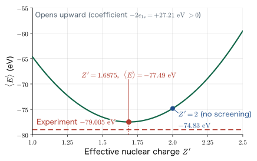
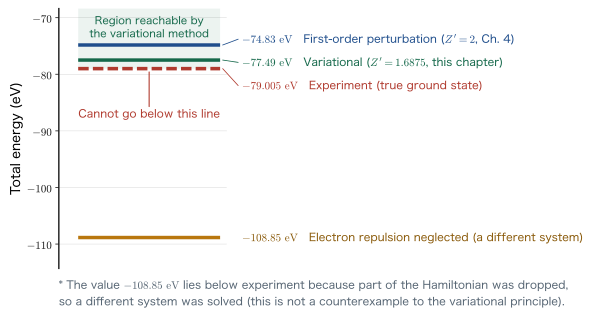
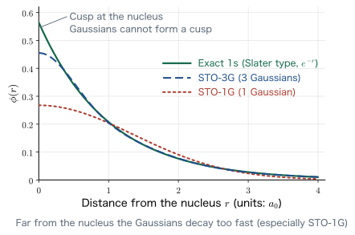

Chapter 3The Variational Principle
In Chapter 2, we separated the variables of the Schrödinger equation of the hydrogen atom in polar coordinates, and obtained the three quantum numbers $n,\ell,m$ and the exact wave functions. As materials, however, we cannot go on dealing only with hydrogen atoms. What we actually face is oxygen, titanium, and lanthanum—that is, assemblies of many-electron atoms. So how can the Schrödinger equation of a many-electron atom be solved? The moment we ask this, we run into the first wall. With just two electrons, the equation can no longer be solved exactly.
In this chapter, taking the helium atom, the simplest of the many-electron atoms, as our subject, we (1) confirm with equations why it cannot be solved exactly, and (2) introduce the variational principle as a tool for obtaining a “plausible” energy nonetheless. The variational principle is a proposition of a single line: “No matter what trial function we use to compute the energy expectation value, the value never falls below the true ground-state energy.” Yet it is precisely because of this one line that computational software around the world, such as Gaussian, GAMESS, VASP, and Quantum ESPRESSO, can operate under the guiding principle that “the lower we push the energy, the closer we get to the right answer.” The goal of this chapter is to derive the effective nuclear charge of helium, $Z'=Z-5/16=1.6875$, with our own hands, and to compare the total energy $-77.49$ eV with the experimental value $-79.005$ eV. Along the way, we also acquire bra–ket notation, which we will use in all the following chapters.
- Writing down the Hamiltonian of the helium atom (two kinetic-energy terms + two nucleus–electron attraction terms + one electron–electron repulsion term)
- Why the method of separation of variables breaks down once the electron–electron repulsion term is present, and where in the equation to spot that breakdown
- The gap between the crude estimate $E=2Z^2\epsilon_{1s}=-108.8$ eV, obtained by ignoring the electron–electron repulsion, and the experimental value $-79.005$ eV
- Bra–ket notation: $\langle a|b\rangle$, $|b\rangle\langle a|$, orthonormality $\langle\psi_n|\psi_m\rangle=\delta_{nm}$, and the completeness relation $\sum_n|\psi_n\rangle\langle\psi_n|=\mathbb{I}$
- The trial function $\psi_T=\phi_{Z'}(\bm r_1)\phi_{Z'}(\bm r_2)$ with the effective nuclear charge $Z'$ as the variational parameter, and the five-term decomposition of the expectation value
- Minimization by completing the square: $Z'=Z-\dfrac{5}{16}=1.6875$, $\braket{E}=2\epsilon_{1s}\left(Z-\dfrac{5}{16}\right)^2=-77.49$ eV
- A complete proof of the variational principle $\braket{\Psi|\Ham|\Psi}\ge E_0$ (using the expansion in the complete set of eigenfunctions)
- The idea that trial function = basis function, localized basis sets (STO-3G, 6-31G), and the bridge to Chapters 5 and 6
- Digression: the variance $(\Delta p)^2=\braket{p^2}-\braket{p}^2$, and “specific heat is a fluctuation of the energy,” $C_V=\dfrac{\braket{E^2}-\braket{E}^2}{k_{\mathrm B}T^2}$
In this chapter, too, we use SI units. We write $e_0$ for the elementary charge, $\varepsilon_0$ for the vacuum permittivity, $m$ for the electron mass, and $h$ for the Planck constant ($\hbar=h/2\pi$). We will use repeatedly the two fundamental quantities obtained in Chapter 2,
$$ \begin{equation} a_0=\frac{\varepsilon_0 h^2}{\pi m e_0^2}=0.529\times10^{-10}\ \mathrm{m}, \qquad \epsilon_{1s}=-\frac{m e_0^4}{8\varepsilon_0^2 h^2}=-13.606\ \mathrm{eV} \label{eq:3-constants} \end{equation} $$These two are not independent; let us first confirm that they are tied together by the following relation. This is the “key to unit conversion” that will appear many times in this chapter.
$$ \begin{align} \frac{e_0^2}{4\pi\varepsilon_0 a_0} &= \frac{e_0^2}{4\pi\varepsilon_0}\cdot\frac{\pi m e_0^2}{\varepsilon_0 h^2} = \frac{m e_0^4}{4\varepsilon_0^2 h^2} = 2\times\frac{m e_0^4}{8\varepsilon_0^2 h^2} = -2\epsilon_{1s} \nonumber\\[4pt] &= 27.211\ \mathrm{eV}. \label{eq:3-hartree} \end{align} $$Math Note: The integral formulas used in this chapter
Every integral in this chapter reduces to the following single formula (see Appendix A). For $a\gt 0$ and $n$ a nonnegative integer,
$$ \int_0^\infty r^n e^{-ar}\,\dd r=\frac{n!}{a^{n+1}} . $$Indeed, for $n=0$ we have $\int_0^\infty e^{-ar}\dd r=1/a$, and the formula can be shown by induction, because each differentiation with respect to $a$ brings down a factor $-r$ on the left-hand side and produces $-1/a^2,\ +2/a^3,\dots$ on the right-hand side. Also, the three-dimensional integral of a spherically symmetric function $f(r)$, using the volume element in polar coordinates $\dd^3r=r^2\sin\theta\,\dd r\,\dd\theta\,\dd\varphi$, becomes
$$ \int f(r)\,\dd^3 r=4\pi\int_0^\infty f(r)\,r^2\,\dd r $$(because the angular integral gives $\int_0^\pi\sin\theta\,\dd\theta\int_0^{2\pi}\dd\varphi=2\cdot2\pi=4\pi$).
3.1 After Hydrogen, the Helium Atom
Why? Isn't the hydrogen atom enough?
The hydrogen atom treated in Chapter 2 is a special system with only one electron. That is exactly why it could be solved exactly. In practical materials science, however, the systems we deal with are oxygen (8 electrons) and titanium (22 electrons) in oxides, and lithium (3 electrons) and cobalt (27 electrons) in battery materials. There are materials, such as hydrogen-ion conductors, in which hydrogen itself plays the leading role, but even then many-electron atoms are always present around it. What happens when there are two or more electrons?—computational science cannot get started without facing this question. So we begin with the simplest many-electron atom, the helium atom, which has two electrons.
3.1.1 Coordinate system of the helium atom
Consider a system in which a nucleus with two protons (charge $+2e_0$, or $+Ze_0$ in general) is placed at the origin, with two electrons around it. Let the position vector of electron 1 be $\bm r_1$ and that of electron 2 be $\bm r_2$, and write their distances from the origin as $r_1=\abs{\bm r_1}$ and $r_2=\abs{\bm r_2}$. The distance between the two electrons is $r_{12}=\abs{\bm r_1-\bm r_2}$.
Caution: Doesn't the nucleus move?
Here we have fixed the nucleus at the origin. Strictly speaking the nucleus also moves, but since the mass of a proton is about 1836 times that of an electron, the kinetic energy of the nucleus is smaller than that of the electrons by orders of magnitude. This approximation of “holding the nucleus still” is called the Born–Oppenheimer approximation, and we will treat it head-on in Chapter 8. In this chapter we use this approximation implicitly.
3.1.2 Writing down the Hamiltonian
The Schrödinger equation is an eigenvalue equation for the sum of the kinetic energy and the potential energy of the particles (that is, the Hamiltonian $\Ham$). Therefore we need only enumerate all the terms that make up the energy of the helium atom. There are five terms in all.
(1) Kinetic energy of electron 1. As in Chapter 2, using the momentum operator $\hat{\bm p}_1=-i\hbar\nabla_1$, we have
$$ \frac{\hat{\bm p}_1^{\,2}}{2m} =\frac{-\hbar^2}{2m}\left(\frac{\partial^2}{\partial x_1^2}+\frac{\partial^2}{\partial y_1^2}+\frac{\partial^2}{\partial z_1^2}\right) =\frac{-h^2}{8\pi^2 m}\nabla_1^2 . $$Here we used $\hbar^2/2m=h^2/8\pi^2m$, which follows from $\hbar=h/2\pi$. $\nabla_1^2$ is the Laplace operator that acts only on the coordinates of electron 1.
(2) Kinetic energy of electron 2. It has exactly the same form, with only the subscript changed to 2: $\dfrac{\hat{\bm p}_2^{\,2}}{2m}=\dfrac{-h^2}{8\pi^2 m}\nabla_2^2$.
(3) Potential energy of electron 1 due to the nucleus. Since this is the Coulomb potential between the charges $+Ze_0$ and $-e_0$,
$$ -\frac{Ze_0^2}{4\pi\varepsilon_0}\frac{1}{r_1} . $$The sign is negative because the force is attractive (the closer they approach, the lower the energy).
(4) Potential energy of electron 2 due to the nucleus. Similarly, $-\dfrac{Ze_0^2}{4\pi\varepsilon_0}\dfrac{1}{r_2}$.
(5) Potential energy due to the repulsion between electron 1 and electron 2. Since both charges are $-e_0$, the product is $(-e_0)(-e_0)=+e_0^2$, and the sign is positive (repulsive):
$$ +\frac{e_0^2}{4\pi\varepsilon_0}\frac{1}{\abs{\bm r_1-\bm r_2}} . $$The sum of these five terms is the Hamiltonian of the helium atom.
Therefore the Schrödinger equation of the helium atom can be written as
$$ \begin{equation} \left[\frac{\hat{\bm p}_1^{\,2}}{2m}-\frac{Ze_0^2}{4\pi\varepsilon_0 r_1} +\frac{\hat{\bm p}_2^{\,2}}{2m}-\frac{Ze_0^2}{4\pi\varepsilon_0 r_2} +\frac{e_0^2}{4\pi\varepsilon_0\abs{\bm r_1-\bm r_2}}\right]\psi(\bm r_1,\bm r_2)=E\,\psi(\bm r_1,\bm r_2) \label{eq:3-he-schrodinger} \end{equation} $$This book follows the convention of writing $\psi$ for many-electron wave functions and $\phi$ for one-electron wave functions (as specified, from Chapter 7 onward the orbital $\chi$, which includes spin, also appears). The wave function $\psi(\bm r_1,\bm r_2)$ in Eq. \eqref{eq:3-he-schrodinger}, written in polar coordinates, is $\psi(r_1,\theta_1,\varphi_1,r_2,\theta_2,\varphi_2)$, a function of six variables. The three variables of the hydrogen atom have doubled all at once.
Physical Meaning: The last term is the troublemaker
Of the five terms in Eq. \eqref{eq:3-he-hamiltonian}, the first four separate cleanly into “quantities involving only electron 1” and “quantities involving only electron 2.” The fifth term, $e_0^2/4\pi\varepsilon_0\abs{\bm r_1-\bm r_2}$, alone contains both $\bm r_1$ and $\bm r_2$ at the same time. As we will see below, this “containing both at the same time” is precisely the culprit that makes an exact solution impossible. In terms of physics it says nothing more than the obvious—the force that electron 2 feels changes depending on where electron 1 is; in other words, there is electron correlation.
3.2 Why Can't It Be Solved Exactly?
3.2.1 Trying separation of variables
The most standard way to solve a partial differential equation is the method of separation of variables. When we solved the hydrogen atom in Chapter 2, we likewise set $\psi(r,\theta,\varphi)=R(r)\Theta(\theta)\Phi(\varphi)$ and decomposed the equation into three ordinary differential equations. Let us try the same approach. That is, we assume that the six-variable wave function of helium can be written as
$$ \begin{equation} \psi(r_1,\theta_1,\varphi_1,r_2,\theta_2,\varphi_2) =\phi_1(r_1,\theta_1,\varphi_1)\,\phi_2(r_2,\theta_2,\varphi_2) \equiv \phi_1\phi_2 \label{eq:3-separation-ansatz} \end{equation} $$a product of a function $\phi_1$ of electron 1 only and a function $\phi_2$ of electron 2 only. Substituting this into Eq. \eqref{eq:3-he-schrodinger} gives
$$ \left[\frac{\hat{\bm p}_1^{\,2}}{2m}-\frac{Ze_0^2}{4\pi\varepsilon_0 r_1} +\frac{\hat{\bm p}_2^{\,2}}{2m}-\frac{Ze_0^2}{4\pi\varepsilon_0 r_2} +\frac{e_0^2}{4\pi\varepsilon_0\abs{\bm r_1-\bm r_2}}\right]\phi_1\phi_2=E\,\phi_1\phi_2 . $$Here we make an important observation. Both $\hat{\bm p}_1^{\,2}$ and $1/r_1$ act only on the coordinates of electron 1. Therefore, from the point of view of these operators, $\phi_2$ is “just a constant” and can be moved out to the front. Similarly, $\phi_1$ is a constant from the point of view of the operators that involve electron 2. Hence the equation above can be rearranged as
$$ \begin{equation} \left(\frac{\hat{\bm p}_1^{\,2}\phi_1}{2m}-\frac{Ze_0^2}{4\pi\varepsilon_0 r_1}\phi_1\right)\phi_2 +\left(\frac{\hat{\bm p}_2^{\,2}\phi_2}{2m}-\frac{Ze_0^2}{4\pi\varepsilon_0 r_2}\phi_2\right)\phi_1 +\frac{e_0^2}{4\pi\varepsilon_0\abs{\bm r_1-\bm r_2}}\phi_1\phi_2=E\,\phi_1\phi_2 \label{eq:3-separation-substituted} \end{equation} $$Next, as is the standard procedure in the method of separation of variables, we divide both sides by $\phi_1\phi_2$. In the first term $\phi_2$ cancels, in the second term $\phi_1$ cancels, and in the third term $\phi_1\phi_2$ cancels completely. The result is
$$ \begin{equation} \underbrace{\left(\frac{\hat{\bm p}_1^{\,2}\phi_1}{2m}-\frac{Ze_0^2}{4\pi\varepsilon_0 r_1}\phi_1\right)\Big/\phi_1}_{\text{coordinates of electron 1 only}} +\underbrace{\left(\frac{\hat{\bm p}_2^{\,2}\phi_2}{2m}-\frac{Ze_0^2}{4\pi\varepsilon_0 r_2}\phi_2\right)\Big/\phi_2}_{\text{coordinates of electron 2 only}} +\underbrace{\frac{e_0^2}{4\pi\varepsilon_0}\frac{1}{\abs{\bm r_1-\bm r_2}}}_{\text{coordinates of both}} =\underbrace{E}_{\text{constant}} \label{eq:3-separation-divided} \end{equation} $$.
3.2.2 Where does the breakdown occur?
Let us recall the logic of separation of variables. When an equation of the form “a function of $x$ only” + “a function of $y$ only” = “a constant” holds, the first term must be a constant independent of $x$ if the equation is to be preserved as $x$ is varied, and likewise the second term must be a constant. This is the mechanism by which separation of variables works.
Looking at Eq. \eqref{eq:3-separation-divided}, the right-hand side is the constant $E$, the first term is a function of the coordinates of electron 1 only, and the second term is a function of the coordinates of electron 2 only—so far, so good. However, the third term contains the coordinates of both electron 1 and electron 2. Its value changes whether we vary $\bm r_1$ or $\bm r_2$, so it cannot be pulled out as a constant. We therefore cannot draw the conclusion “the first term = a constant, the second term = a constant,” and separation of variables fails.
Caution: What “cannot be solved” means
“Cannot be solved exactly” means that no solution of the product form $\psi=\phi_1\phi_2$ exists; more generally, it means that no closed-form exact solution can be written as a finite combination of elementary functions. It is possible to solve the problem numerically to arbitrary accuracy; in fact, Pekeris and coworkers pushed the variational method to its limit and obtained the ground-state energy of helium to ten or more decimal places (Ref. [6]). There are also mathematicians who study partial differential equations that cannot be solved by separation of variables as a subject in its own right. Note that “cannot be solved” does not mean “nothing can be known.”
Why? The three-body problem cannot be solved even in classical mechanics
In fact, the statement that “a system in which three or more particles exert forces on one another cannot be solved analytically” is not specific to quantum mechanics. Even in classical mechanics, it is known that the three-body problem, such as that of the Sun, the Earth, and the Moon, has no general closed-form solution (Poincaré, 1890s). The helium atom is precisely a three-body problem, “nucleus + electron + electron,” so it is rather natural that it cannot be solved. What we should aim for is therefore not an exact solution but a controlled approximation.
3.3 What Happens If We Ignore the Electron–Electron Repulsion?
3.3.1 First, try the crudest approximation
Once we know that the problem cannot be solved exactly, the next thing to consider is, “A rough approximation is fine; I just want to know an approximate value.” The crudest approximation is to set the troublesome third term equal to zero. That is, dropping the electron–electron repulsion term in Eq. \eqref{eq:3-separation-divided} gives
$$ \left(\frac{\hat{\bm p}_1^{\,2}\phi_1}{2m}-\frac{Ze_0^2}{4\pi\varepsilon_0 r_1}\phi_1\right)\Big/\phi_1 +\left(\frac{\hat{\bm p}_2^{\,2}\phi_2}{2m}-\frac{Ze_0^2}{4\pi\varepsilon_0 r_2}\phi_2\right)\Big/\phi_2=E $$which has the form “constant + constant = constant,” so separation of variables holds. Moreover, each term is exactly the Schrödinger equation of a system in which only one electron is bound to a nucleus of charge $Ze_0$—that is, a hydrogen-like atom. As we obtained in Chapter 2, the energy levels of a hydrogen-like atom are
$$ \begin{equation} E_n^{(Z)}=Z^2\,\frac{\epsilon_{1s}}{n^2} =Z^2\left(-\frac{m e_0^4}{8\varepsilon_0^2 h^2}\right)\frac{1}{n^2} =Z^2\left(-\frac{e_0^2}{8\pi\varepsilon_0 a_0}\right)\frac{1}{n^2} \label{eq:3-hydrogenic} \end{equation} $$Note that the energy depends on $Z$ through its square. The larger the nuclear charge, the more strongly the electron is attracted, and the more deeply the level sinks.
For helium, $Z=2$, and the 1s orbital has $n=1$. From Eq. \eqref{eq:3-hydrogenic}, each electron contributes $Z^2\epsilon_{1s}=4\epsilon_{1s}$, and since there are two electrons,
$$ \begin{equation} E=2Z^2\epsilon_{1s}=2\times4\times(-13.606\ \mathrm{eV})=8\times(-13.606\ \mathrm{eV})=-108.8\ \mathrm{eV} \label{eq:3-nonint-energy} \end{equation} $$is obtained. This is the crudest estimate of the total energy of helium.
3.3.2 Comparing with the experimental value
The experimental value of the total energy of helium is $-79.005$ eV. This is “the energy required to pull both electrons of a helium atom away to infinity,” and it is measured as the sum of the first ionization energy $24.587$ eV and the second ionization energy $54.418$ eV ($24.587+54.418=79.005$ eV).
The difference between the calculated value $-108.8$ eV and the experimental value $-79.005$ eV is
$$ \abs{-108.8-(-79.005)}=29.84\ \mathrm{eV} $$—a full 30 eV or so. Considering that the energy of a single chemical bond is a few eV, this is an error that is larger by an order of magnitude.
Caution: A “27% error” and a “38% error”
When an error is expressed as a percentage, the number changes depending on what is taken as the denominator. Taking the calculated value $-108.8$ eV as the reference gives $29.84/108.8=27.4\%$; taking the experimental value $-79.005$ eV as the reference gives $29.84/79.005=37.8\%$. The lecture materials use the former, “about 27%.” Either way, this is an error of “tens of percent,” which is entirely useless for discussing the properties of materials. In this book, from here on, we take the error relative to the experimental value as a rule, and add the absolute value (in eV) where necessary.
To make matters worse, the calculated value is lower than the experimental value (that is, on the more stable side). As we will see in Section 3.7, a correctly computed expectation value cannot fall below the true ground-state energy. The reason $-108.8$ eV fell below $-79.005$ eV is that we arbitrarily discarded part of the Hamiltonian (the electron–electron repulsion)—that is, we ended up computing a different system.
Physical Meaning: Electron–electron repulsion can never be ignored
The error of 30 eV incurred by ignoring the electron–electron repulsion amounts to about 40% of the total energy of helium. In other words, the electron–electron repulsion is not a “small correction” but a leading term that determines the energy of the system. The theories that treat many-electron systems—the variational method (this chapter), perturbation theory (Chapter 4), the Hartree–Fock method (Chapter 9), and density functional theory—can all be said to be devices for deciding how to treat this term.
Example 3.1: Ionization energy of a hydrogen-like ion
(a) Find the first ionization energy of He$^+$ (one electron, $Z=2$) from Eq. \eqref{eq:3-hydrogenic}. (b) Using that result and Eq. \eqref{eq:3-nonint-energy}, predict the first ionization energy of the helium atom under the approximation that ignores the electron–electron repulsion, and compare it with the experimental value $24.587$ eV.
Solution (a) The 1s level of He$^+$ is $E=Z^2\epsilon_{1s}=4\times(-13.606)=-54.42$ eV. The ionization energy is the energy needed to bring this up to 0, so it is $+54.42$ eV. This agrees with the experimental value $54.418$ eV to three digits. This is only natural, since the exact solution is available for a system with one electron.
(b) In the approximation that ignores the electron–electron repulsion, the total energy of He is $-108.8$ eV and the total energy of He$^+$ is $-54.42$ eV, so the first ionization energy is predicted to be
$$-54.42-(-108.8)=54.42\ \mathrm{eV}$$This is more than twice the experimental value $24.587$ eV, so it does not agree at all. The cause is clear: because He has two electrons, its energy is raised by the amount of the electron–electron repulsion (that is, the binding is weakened), and we ignored that. A system with one electron can be solved exactly, but the moment there are two electrons the approach breaks down—this contrast is the starting point of this chapter.
Why? Even so, we want to treat it as “solved”
If we cannot write down the exact solution, what should we do? Here we switch our way of thinking. We give up on finding the eigenvalues and eigenfunctions exactly, and look only for a “plausible” value of the energy. As we learned in Chapter 2, the expectation value of a physical quantity $\hat A$ in a wave function $\psi$ is given by $\braket{A}=\int\psi^*\hat A\psi\,\dd x$. If we take the Hamiltonian $\Ham$ as $\hat A$, this is the expectation value of the energy. Even if the wave function is not an exact eigenfunction, the expectation value can be computed. All that remains is the question of which $\psi$ to use. This policy is the subject of this chapter, and the variational principle is what guarantees its validity.
3.4 Bra–Ket Notation
3.4.1 The problem of being buried in integral signs
As we learned in Chapter 2, the energy expectation value of a one-dimensional system is
$$ \begin{equation} \braket{E}=\int_{-\infty}^{\infty}\psi^*\,\Ham\,\psi\,\dd x \label{eq:3-expectation-1d} \end{equation} $$For a three-dimensional function, three integral signs are needed:
$$ \begin{equation} \braket{E}=\int_{-\infty}^{\infty}\!\int_{-\infty}^{\infty}\!\int_{-\infty}^{\infty}\psi^*\,\Ham\,\psi\,\dd x\,\dd y\,\dd z \label{eq:3-expectation-3d} \end{equation} $$Now, the wave function of helium has six variables, so three more integral signs are added, giving a six-fold integral. For a many-electron system this swells to a $3N$-fold integral. If we wrote this out every time, the equations would be buried in integral signs and the essence would be lost.
The shorthand that physicists use for this is bra–ket notation (also called Dirac notation). It folds the entire integral into a single symbol.
Definition: Bra–ket notation
For functions $f(x)$ and $g(x)$, we introduce the bra $\bra{f}$ and the ket $\ket{g}$, and define their product to be the following “inner product of functions”:
$$ \begin{equation} \langle f|g\rangle \equiv \int_{-\infty}^{\infty} f^*(x)\,g(x)\,\dd x . \label{eq:3-braket-def} \end{equation} $$Note that the complex conjugate $*$ is always attached on the bra side. The form with an operator $\hat A$ sandwiched in between is defined similarly:
$$ \langle f|\hat A|g\rangle \equiv \int_{-\infty}^{\infty} f^*(x)\,\hat A\,g(x)\,\dd x $$For the multidimensional case, only the integral on the right-hand side becomes a multiple integral; the notation on the left-hand side does not change. That is, the energy expectation value can be written, regardless of the dimension, as
$$ \braket{E}=\bra{\psi}\Ham\ket{\psi} $$in a single line.
The name derives from splitting the word “bracket” (a kind of parenthesis) into “bra” and “ket.” It was coined by Dirac, and it is rather witty.
3.4.2 The overlap integral can be written in one line
To appreciate the benefit of bra–ket notation, let us preview a quantity that will play the leading role in Chapter 5. When atom A and atom B sit next to each other, and their wave functions are $\psi_{\mathrm A},\psi_{\mathrm B}$, their overlap integral $S$ is defined as
$$ S=\iiint \psi_{\mathrm A}^*(\bm r)\,\psi_{\mathrm B}(\bm r)\,\dd x\,\dd y\,\dd z $$In bra–ket notation this becomes just a single line:
$$ \begin{equation} S=\langle\psi_{\mathrm A}|\psi_{\mathrm B}\rangle \label{eq:3-overlap-braket} \end{equation} $$How simple! $S$ is a quantity that expresses how much two orbitals overlap in space, and it is one of the most important quantities determining the strength of a chemical bond. In Chapter 5, we compute it by hand for two 1s orbitals in elliptical coordinates (prolate spheroidal coordinates).
3.4.3 Correspondence with the inner product of vectors
Bra–ket notation can be used not only for functions but also for ordinary vectors. We simply let a row vector correspond to a bra and a column vector to a ket:
$$ \vec a=[a_x,\ a_y,\ a_z]=\bra{a}, \qquad \vec b=\begin{bmatrix}b_x\\ b_y\\ b_z\end{bmatrix}=\ket{b} . $$Then the inner product is expressed as
$$ \vec a\cdot\vec b=\langle a|b\rangle=a_x b_x+a_y b_y+a_z b_z $$That is, placing the bra on the left and the ket on the right and multiplying them gives an inner product (a scalar).
Now, conversely, what happens if we place the ket on the left and the bra on the right? Since this is a column vector times a row vector, the answer is a matrix:
$$ \ket{b}\bra{a} =\begin{bmatrix}b_x\\ b_y\\ b_z\end{bmatrix}[a_x,\ a_y,\ a_z] =\begin{bmatrix} b_x a_x & b_x a_y & b_x a_z\\ b_y a_x & b_y a_y & b_y a_z\\ b_z a_x & b_z a_y & b_z a_z \end{bmatrix}. $$“Merely swapping the order of the bra and the ket turns a scalar into a matrix”—this fact plays a decisive role in the completeness relation of Section 3.7.
Why? Why does “multiplication” turn into “integration”?
The inner product of vectors is a sum, $\sum_i a_i b_i$. The inner product of functions, on the other hand, is an integral, $\int f^*g\,\dd x$. It may seem odd that these two are called by the same name, “inner product.” But recall that the definition of the inner product contains a $\sum$. If we regard a function $f(x)$ as an “infinite-dimensional vector” formed by lining up its values $f(x_1),f(x_2),\dots$ at the points $x_1,x_2,\dots$ obtained by dividing $x$ finely, then
$$ \sum_i f^*(x_i)g(x_i)\,\Delta x \ \xrightarrow[\Delta x\to0]{}\ \int f^*(x)g(x)\,\dd x $$and the sum turns into an integral. In other words, a function is an infinite-dimensional vector. Once you become used to this view (function space, Hilbert space), the notation of quantum mechanics becomes much easier to see through. In the secular equation of Chapter 11, we will solve an eigenvalue problem for a vector whose entries are the expansion coefficients of a wave function; this idea is what matters there.
3.4.4 The Schrödinger equation and orthonormality
Using bra–ket notation, the Schrödinger equation itself can be written as
$$ \Ham\ket{\psi}=E\ket{\psi} $$If we attach as a subscript the principal quantum number $n$ of the hydrogen atom, or the quantum number $n$ of the infinite potential well, then
$$ \begin{equation} \Ham\ket{\psi_n}=E_n\ket{\psi_n}\qquad(n=0,1,2,\dots) \label{eq:3-schrodinger-braket} \end{equation} $$Here, multiplying eigenfunctions with different $n$ and integrating gives 0 (orthogonality), while eigenfunctions with the same $n$ give 1 (the normalization condition). Summarizing these, we write
Here $\delta_{nm}$ is the Kronecker delta. A set of functions with this property is called an orthonormal system. It is known that the eigenfunctions of a Hermitian operator such as the Hamiltonian can always be chosen to form an orthonormal system.
Caution: Vectors and functions follow different conventions
When the bra $\bra{a}$ and the ket $\ket{b}$ are vectors, $\langle a|b\rangle$ is a mere inner product (a sum of products of components). But when they are functions, as in $\bra{a}=f^*(x)$, $\ket{b}=g(x)$, $\langle a|b\rangle$ means the integral $\int f^*(x)g(x)\dd x$. The same symbol becomes a sum or an integral depending on the context, so always be conscious of what you are dealing with at the moment. Note also that the spin functions $\bm\alpha(\sigma),\bm\beta(\sigma)$ that appear in Chapter 7 are two-component “vectors” (spinors), and their inner product is a sum. We thus use integration for the spatial part and summation for the spin part.
3.4.5 Thinking of an eigenfunction as a “column vector”
Since the term orthonormal system has come up, let us introduce a more intuitive view. We regard the solutions $\ket{\psi_0},\ket{\psi_1},\ket{\psi_2},\dots$ of the Schrödinger equation as mutually orthogonal unit vectors in an infinite-dimensional space:
$$ \ket{\psi_0}=\begin{bmatrix}\psi_0\\ 0\\ 0\\ \vdots\end{bmatrix},\quad \ket{\psi_1}=\begin{bmatrix}0\\ \psi_1\\ 0\\ \vdots\end{bmatrix},\quad \ket{\psi_2}=\begin{bmatrix}0\\ 0\\ \psi_2\\ \vdots\end{bmatrix},\quad\dots $$Then $\ket{\psi_0}\bra{\psi_0}$ is a matrix whose only nonzero entry is the $(1,1)$ element, $\int\psi_0^*\psi_0\,\dd x=1$, with all other entries equal to 0:
$$ \ket{\psi_0}\bra{\psi_0}= \begin{bmatrix} 1 & 0 & 0 & \cdots\\ 0 & 0 & 0 & \cdots\\ 0 & 0 & 0 & \cdots\\ \vdots & \vdots & \vdots & \ddots \end{bmatrix},\qquad \ket{\psi_1}\bra{\psi_1}= \begin{bmatrix} 0 & 0 & 0 & \cdots\\ 0 & 1 & 0 & \cdots\\ 0 & 0 & 0 & \cdots\\ \vdots & \vdots & \vdots & \ddots \end{bmatrix},\ \dots $$Therefore, summing over all $n$ gives the identity matrix. This is called the completeness relation:
Since “multiplying by the identity matrix changes nothing,” this $\mathbb{I}$ can be slipped in anywhere in an equation. The proof of the variational principle in Section 3.7 uses exactly this trick.
Example 3.2: Energy expectation value of a superposition state
Using an orthonormal system $\{\ket{\psi_n}\}$, we construct the state $\ket{\Psi}=\dfrac{1}{\sqrt5}\bigl(\ket{\psi_0}+2\ket{\psi_1}\bigr)$. (a) Verify that $\ket{\Psi}$ is normalized. (b) Express the energy expectation value of this state in terms of $E_0,E_1$. (c) For $E_0=-13.606$ eV and $E_1=-3.401$ eV ($n=1,2$ of the hydrogen atom), find the numerical value and compare it with $E_0$.
Solution (a) The bra is $\bra{\Psi}=\dfrac{1}{\sqrt5}\bigl(\bra{\psi_0}+2\bra{\psi_1}\bigr)$ (since the coefficients are real, taking the complex conjugate leaves them unchanged), so
$$ \langle\Psi|\Psi\rangle=\frac{1}{5}\Bigl(\langle\psi_0|\psi_0\rangle+2\langle\psi_0|\psi_1\rangle+2\langle\psi_1|\psi_0\rangle+4\langle\psi_1|\psi_1\rangle\Bigr) =\frac{1}{5}(1+0+0+4)=1 . $$(b) Using $\Ham\ket{\psi_n}=E_n\ket{\psi_n}$ and the orthonormality \eqref{eq:3-orthonormal}, we obtain
$$ \bra{\Psi}\Ham\ket{\Psi} =\frac{1}{5}\Bigl(E_0\langle\psi_0|\psi_0\rangle+2E_1\langle\psi_0|\psi_1\rangle+2E_0\langle\psi_1|\psi_0\rangle+4E_1\langle\psi_1|\psi_1\rangle\Bigr) =\frac{E_0+4E_1}{5} . $$(c) Substituting the numbers gives $\dfrac{-13.606+4\times(-3.401)}{5}=\dfrac{-13.606-13.604}{5}=\dfrac{-27.210}{5}=-5.442$ eV. This is higher than the ground-state energy $E_0=-13.606$ eV. This is no accident but a consequence of the variational principle, which we prove in Section 3.7. When components other than the ground state (here, $\ket{\psi_1}$) are mixed in, the expectation value is always pushed up above $E_0$.
3.5 The Trial Function and the Effective Nuclear Charge — The Energy Expectation Value of Helium
3.5.1 Strategy of the calculation
To compute the energy expectation value $\braket{E}=\bra{\psi}\Ham\ket{\psi}$, we have to specify $\psi$ concretely. Since the exact solution is not available, we have no choice but to prepare a function that looks plausible. We therefore proceed in two stages.
- Prepare a wave function meant as a trial that imitates the exact solution for the hydrogen atom—the trial function—and substitute it into the expression for the energy expectation value. The trial function is made to contain one or more adjustable parameters.
- Regard the resulting expectation value as a function of the parameters, and find the parameters that minimize it.
“If we choose a wave function that is plausible in the sense of minimizing the energy expectation value of the system, we should arrive at a reasonable answer”—this is the idea behind the variational method. We prove why this idea is justified in Section 3.7.
3.5.2 The screening picture and the choice of parameter
Why? What should we choose as the parameter?
The parameters of a trial function cannot be chosen arbitrarily. If we choose a physically meaningful quantity, a large improvement is obtained with few parameters. In the case of helium, the key is screening. Electron 1 is attracted to the nucleus ($+2e_0$), but the cloud of negative charge of electron 2 is spread out along the way. Then the “effective nuclear charge” seen from electron 1 becomes smaller than $+2e_0$. In other words, the electrons shield each other and dilute the positive charge of the nucleus. We should therefore replace the nuclear charge $Z$ itself by a parameter $Z'$ and examine what value of $Z'$ gives the lowest energy. This $Z'$ is called the effective nuclear charge.
3.5.3 Writing down the trial function
When electron–electron repulsion is ignored, the wave function of helium was the product of hydrogen-like 1s orbitals. We therefore prepare the 1s orbital in which the nuclear charge $Z$ is replaced by $Z'$,
$$ \phi_{Z'}(\bm r)=\frac{1}{\sqrt\pi}\left(\frac{Z'}{a_0}\right)^{3/2}\exp\!\left(-\frac{Z' r}{a_0}\right) $$and take the product of two of these as the trial function.
Definition: The one-parameter trial function for helium
$$ \begin{equation} \psi_T(\bm r_1,\bm r_2)=\phi_{Z'}(\bm r_1)\,\phi_{Z'}(\bm r_2) =\frac{1}{\pi}\left(\frac{Z'}{a_0}\right)^{3}\exp\!\left[-\frac{Z'}{a_0}(r_1+r_2)\right]. \label{eq:3-trial-function} \end{equation} $$The subscript $T$ stands for trial. $Z'$ is the effective nuclear charge, a variational parameter whose value is still undetermined at this stage. Setting $Z'=Z$ returns the wave function for the case in which electron–electron repulsion is neglected.
Math Note: Checking the normalization of the trial function
Let us confirm that $\phi_{Z'}$ is normalized. Setting $\zeta\equiv Z'/a_0$, we have
$$ \begin{align} \int\abs{\phi_{Z'}(\bm r)}^2\dd^3 r &=\frac{1}{\pi}\zeta^3\cdot 4\pi\int_0^\infty e^{-2\zeta r}r^2\,\dd r \nonumber\\ &=4\zeta^3\cdot\frac{2!}{(2\zeta)^3} =4\zeta^3\cdot\frac{2}{8\zeta^3}=1 . \nonumber \end{align} $$Here we used the integral formula $\int_0^\infty r^ne^{-ar}\dd r=n!/a^{n+1}$ ($n=2$, $a=2\zeta$). Since $\psi_T$ is a product of $\phi_{Z'}$, naturally $\langle\psi_T|\psi_T\rangle=1$. Normalization is a prerequisite for applying the variational principle, so please make it a habit to always check it.
3.5.4 Splitting the Hamiltonian into five terms
This is the crux of the calculation. If we sandwich the Hamiltonian \eqref{eq:3-he-hamiltonian} between the trial functions as it is, the nucleus–electron attraction term has the “nuclear charge $Z$” whereas the trial function is built from the “nuclear charge $Z'$”, so the known results for the hydrogen-like atom cannot be used directly. We therefore use the device of splitting the nucleus–electron attraction term into a part with $Z'$ and a remainder. Using the fact that $-Z=-Z'+(Z'-Z)$, we write
$$ -\frac{Ze_0^2}{4\pi\varepsilon_0}\frac{1}{r_1} =-\frac{Z'e_0^2}{4\pi\varepsilon_0}\frac{1}{r_1} +\frac{(Z'-Z)e_0^2}{4\pi\varepsilon_0}\frac{1}{r_1} $$(and likewise for electron 2). Substituting this into Eq. \eqref{eq:3-he-hamiltonian}, the Hamiltonian is organized into the following five parts.
$$ \begin{align} \Ham=\ &\underbrace{\left[\frac{\hat{\bm p}_1^{\,2}}{2m}-\frac{Z'e_0^2}{4\pi\varepsilon_0}\frac{1}{r_1}\right]}_{\text{(i-a) hydrogen-like}} +\underbrace{\left[\frac{\hat{\bm p}_2^{\,2}}{2m}-\frac{Z'e_0^2}{4\pi\varepsilon_0}\frac{1}{r_2}\right]}_{\text{(i-b) hydrogen-like}} \nonumber\\[4pt] &+\underbrace{\frac{(Z'-Z)e_0^2}{4\pi\varepsilon_0}\frac{1}{r_1}}_{\text{(ii-a) nuclear-charge mismatch}} +\underbrace{\frac{(Z'-Z)e_0^2}{4\pi\varepsilon_0}\frac{1}{r_2}}_{\text{(ii-b) nuclear-charge mismatch}} +\underbrace{\frac{e_0^2}{4\pi\varepsilon_0}\frac{1}{\abs{\bm r_1-\bm r_2}}}_{\text{(iii) electron–electron repulsion}} . \label{eq:3-hamiltonian-split} \end{align} $$Therefore the energy expectation value is the sum of five expectation values:
$$ \begin{align} \braket{E}=\bra{\psi_T}\Ham\ket{\psi_T} =\ &\bra{\phi_{Z'}(\bm r_1)}\frac{\hat{\bm p}_1^{\,2}}{2m}-\frac{Z'e_0^2}{4\pi\varepsilon_0 r_1}\ket{\phi_{Z'}(\bm r_1)} +\bra{\phi_{Z'}(\bm r_2)}\frac{\hat{\bm p}_2^{\,2}}{2m}-\frac{Z'e_0^2}{4\pi\varepsilon_0 r_2}\ket{\phi_{Z'}(\bm r_2)} \nonumber\\[4pt] &+\bra{\phi_{Z'}(\bm r_1)}\frac{(Z'-Z)e_0^2}{4\pi\varepsilon_0 r_1}\ket{\phi_{Z'}(\bm r_1)} +\bra{\phi_{Z'}(\bm r_2)}\frac{(Z'-Z)e_0^2}{4\pi\varepsilon_0 r_2}\ket{\phi_{Z'}(\bm r_2)} \nonumber\\[4pt] &+\bra{\psi_T(\bm r_1,\bm r_2)}\frac{e_0^2}{4\pi\varepsilon_0\abs{\bm r_1-\bm r_2}}\ket{\psi_T(\bm r_1,\bm r_2)} . \label{eq:3-five-terms} \end{align} $$The trial function is reduced from $\psi_T$ to a single $\phi_{Z'}$ in the first four terms because, for example in the first term, the integral over electron 2 becomes $\int\abs{\phi_{Z'}(\bm r_2)}^2\dd^3r_2=1$ and drops out. In what follows we evaluate the five terms in turn.
3.5.5 (i) The hydrogen-like term
The operator in the first term is itself the Hamiltonian of a system in which one electron is bound to a nucleus of charge $Z'e_0$. And the trial function $\phi_{Z'}$ is precisely the 1s eigenfunction of that system. Therefore the eigenvalue equation
$$ \left[\frac{\hat{\bm p}_1^{\,2}}{2m}-\frac{Z'e_0^2}{4\pi\varepsilon_0 r_1}\right]\phi_{Z'}(\bm r_1)=Z'^2\epsilon_{1s}\,\phi_{Z'}(\bm r_1) $$holds, and together with the normalization condition $\langle\phi_{Z'}|\phi_{Z'}\rangle=1$ the following
$$ \begin{equation} \text{(i-a)}=\text{(i-b)}=Z'^2\epsilon_{1s} \qquad\Longrightarrow\qquad \text{(i-a)}+\text{(i-b)}=2Z'^2\epsilon_{1s} \label{eq:3-term12} \end{equation} $$is obtained.
Derivation: Checking the hydrogen-like term by splitting it into kinetic energy and attraction
Let us verify Eq. \eqref{eq:3-term12} by computing the expectation values of the kinetic energy and of the attraction separately. First, for the 1s orbital (exponent $e^{-\zeta r}$, $\zeta=Z'/a_0$), the kinetic energy is
$$ \bra{\phi_{Z'}}\frac{\hat{\bm p}^{\,2}}{2m}\ket{\phi_{Z'}}=\frac{\hbar^2\zeta^2}{2m}=\frac{h^2}{8\pi^2m}\left(\frac{Z'}{a_0}\right)^2 $$Substituting $a_0=\varepsilon_0h^2/\pi me_0^2$ here gives
$$ \frac{h^2Z'^2}{8\pi^2m}\cdot\frac{\pi^2m^2e_0^4}{\varepsilon_0^2h^4} =Z'^2\frac{me_0^4}{8\varepsilon_0^2h^2}=-Z'^2\epsilon_{1s} $$which is a positive value (as it should be for a kinetic energy). Next, for the expectation value of the attraction we use the important result, needed again later,
$$ \begin{equation} \bra{\phi_{Z'}}\frac{1}{r}\ket{\phi_{Z'}}=\frac{Z'}{a_0} \label{eq:3-mean-inv-r} \end{equation} $$(which is derived in the next Math Note). Then
$$ \bra{\phi_{Z'}}-\frac{Z'e_0^2}{4\pi\varepsilon_0 r}\ket{\phi_{Z'}} =-Z'\frac{e_0^2}{4\pi\varepsilon_0}\cdot\frac{Z'}{a_0} =-Z'^2\cdot\frac{e_0^2}{4\pi\varepsilon_0a_0} \overset{\eqref{eq:3-hartree}}{=}-Z'^2(-2\epsilon_{1s})=2Z'^2\epsilon_{1s} . $$The sum of the two is $-Z'^2\epsilon_{1s}+2Z'^2\epsilon_{1s}=Z'^2\epsilon_{1s}$, which indeed agrees with Eq. \eqref{eq:3-term12}. Incidentally, we can also read off that the relation $\braket{T}=-\tfrac12\braket{V}$, that is, $\braket{V}=-2\braket{T}$ (the virial theorem), holds.
Math Note: Calculating $\braket{1/r}=Z'/a_0$
Set $\zeta=Z'/a_0$. Since $\phi_{Z'}=\pi^{-1/2}\zeta^{3/2}e^{-\zeta r}$ is spherically symmetric, using the volume element in polar coordinates we obtain
$$ \begin{align} \bra{\phi_{Z'}}\frac{1}{r}\ket{\phi_{Z'}} &=\int \abs{\phi_{Z'}(\bm r)}^2\frac{1}{r}\dd^3r =\frac{\zeta^3}{\pi}\cdot4\pi\int_0^\infty e^{-2\zeta r}\frac{1}{r}\,r^2\,\dd r \nonumber\\ &=4\zeta^3\int_0^\infty r\,e^{-2\zeta r}\,\dd r =4\zeta^3\cdot\frac{1!}{(2\zeta)^2} =4\zeta^3\cdot\frac{1}{4\zeta^2}=\zeta=\frac{Z'}{a_0} . \nonumber \end{align} $$The key point is that $r^2$ (from the volume element) and $1/r$ cancel, leaving an integral of $r^1$. The result has an extremely natural form: “$\braket{1/r}$ is the reciprocal of the orbital extent $a_0/Z'$.” Note that $\braket{r}$ is $\tfrac32 a_0/Z'$, which does not coincide with $1/\braket{1/r}$ (see Chapter 2). The reciprocal of an expectation value and the expectation value of a reciprocal are different things.
3.5.6 (ii) The nuclear-charge mismatch term
The third and fourth terms can be computed immediately by using Eq. \eqref{eq:3-mean-inv-r}.
$$ \begin{align} \text{(ii-a)}&=\frac{(Z'-Z)e_0^2}{4\pi\varepsilon_0}\bra{\phi_{Z'}}\frac{1}{r_1}\ket{\phi_{Z'}} =\frac{(Z'-Z)e_0^2}{4\pi\varepsilon_0}\cdot\frac{Z'}{a_0} \nonumber\\ &=(Z'-Z)Z'\cdot\frac{e_0^2}{4\pi\varepsilon_0 a_0} \overset{\eqref{eq:3-hartree}}{=}(Z'-Z)Z'\cdot(-2\epsilon_{1s}) =2(Z-Z')Z'\epsilon_{1s} . \label{eq:3-term34} \end{align} $$The same holds for electron 2, so together the two give
$$ \text{(ii-a)}+\text{(ii-b)}=4(Z-Z')Z'\epsilon_{1s}=-4(Z'-Z)Z'\epsilon_{1s} . $$Let us check the sign. If screening is effective, $Z'\lt Z$ and so $Z-Z'\gt0$; also $\epsilon_{1s}\lt0$, so this term is negative. Physically, it corresponds to “adding back, after the fact, the amount by which the trial function feels a weaker attraction than the true nuclear charge $Z$ would give.”
3.5.7 (iii) The electron–electron repulsion term
What remains is the fifth term, that is, the expectation value of the electron–electron repulsion
$$ \text{(iii)}=\frac{e_0^2}{4\pi\varepsilon_0}\iint\frac{\abs{\phi_{Z'}(\bm r_1)}^2\abs{\phi_{Z'}(\bm r_2)}^2}{\abs{\bm r_1-\bm r_2}}\,\dd^3r_1\,\dd^3r_2 $$This is a six-fold integral, and to handle the denominator $\abs{\bm r_1-\bm r_2}$, which entangles the two coordinates, an expansion in Legendre polynomials (or a method using Gauss's law of classical electromagnetism) is needed. The complete calculation of this integral is carried out in Chapter 4, Section 4.7, so here we only quote the result:
Since $\epsilon_{1s}\lt0$, we have $-\tfrac54 Z'\epsilon_{1s}\gt0$; that is, this term is positive. Because it is a repulsion, it should act to raise the energy, so the sign is correct.
Caution: Where does the coefficient $5/8$ come from?
If we naively estimate the repulsion between the electrons as “two point charges separated by a distance $\braket{r}$,” the coefficient does not come out as $5/8=0.625$. In reality the electrons are spread out like clouds, and $1/\abs{\bm r_1-\bm r_2}$ must be averaged twice over the electron density. The result of this averaging is $5/8$. This coefficient is the value of the Coulomb integral between hydrogen-like 1s orbitals; we derive it in Chapter 4, Section 4.7, and it reappears in Chapter 9 paired with the exchange integral. What you should remember now is that the expectation value of the electron–electron repulsion is proportional to the first power of $Z'$. This “first power” plays a decisive role in the completion of the square in the next section.
3.5.8 Putting the five terms together
Adding everything above, the energy expectation value is obtained as a function of the effective nuclear charge $Z'$.
Factoring out $\epsilon_{1s}$ and simplifying, we get
$$ \begin{align} \braket{E}(Z') &=\left[2Z'^2-4(Z'-Z)Z'-\frac{5}{4}Z'\right]\epsilon_{1s} \nonumber\\ &=\left[2Z'^2-4Z'^2+4ZZ'-\frac{5}{4}Z'\right]\epsilon_{1s} \nonumber\\ &=\left(-2Z'^2+4ZZ'-\frac{5}{4}Z'\right)\epsilon_{1s} \label{eq:3-energy-quadratic} \end{align} $$This is a quadratic function of $Z'$. Since $\epsilon_{1s}\lt0$, the coefficient of $Z'^2$ satisfies $-2\epsilon_{1s}\gt0$, so this parabola is convex downward (opens upward). That is, it has a minimum value.
Example 3.3: Checking the numerical values of each term
Let $Z=2$ and $\epsilon_{1s}=-13.606$ eV. (a) Find the values of the three kinds of terms and their total for $Z'=2$ (no screening). (b) Find the same for $Z'=1.6875$.
Solution. (a) For $Z'=Z=2$:
- (i) Hydrogen-like term: $2Z'^2\epsilon_{1s}=2\times4\times(-13.606)=-108.85$ eV
- (ii) Nuclear-charge mismatch: $-4(Z'-Z)Z'\epsilon_{1s}=0$ (because $Z'=Z$)
- (iii) Electron–electron repulsion: $-\tfrac54\times2\times(-13.606)=+34.02$ eV
The total is $-108.85+0+34.02=-74.83$ eV. This is just the value $-108.8$ eV of Section 3.3 with the electron–electron repulsion added back, and it agrees exactly with the result of first-order perturbation theory, which we study in Chapter 4, $\left(2Z^2-\tfrac54Z\right)\epsilon_{1s}=(8-2.5)\times(-13.606)=-74.83$ eV.
(b) For $Z'=1.6875$: noting that $Z'^2=2.84766$ and $Z'-Z=-0.3125$,
- (i) $2\times2.84766\times(-13.606)=-77.49$ eV
- (ii) $-4\times(-0.3125)\times1.6875\times(-13.606)=-28.70$ eV
- (iii) $-\tfrac54\times1.6875\times(-13.606)=+28.70$ eV
The total is $-77.49-28.70+28.70=-77.49$ eV. This is 2.66 eV lower than in (a), and closer to the experimental value $-79.005$ eV. Interestingly, at the optimal $Z'$, (ii) and (iii) cancel each other exactly. This is no coincidence; it is precisely the condition $Z'=Z-5/16$ that we will see in the next section. Indeed, substituting $Z'-Z=-5/16$ gives $\text{(ii)}=-4\times(-\tfrac{5}{16})Z'\epsilon_{1s}=\tfrac54Z'\epsilon_{1s}$, which cancels exactly against $\text{(iii)}=-\tfrac54Z'\epsilon_{1s}$.
3.6 Minimization by Completing the Square
3.6.1 Completing the square
We now find the minimum of Eq. \eqref{eq:3-energy-quadratic}. Let us use completing the square, which is familiar from high school mathematics. First, we factor out $-2\epsilon_{1s}$ so that the coefficient of $Z'^2$ becomes $+1$:
$$ \begin{align} \braket{E}(Z') &=\left(-2Z'^2+4ZZ'-\frac{5}{4}Z'\right)\epsilon_{1s} \nonumber\\ &=-2\epsilon_{1s}\left(Z'^2-2ZZ'+\frac{5}{8}Z'\right) . \label{eq:3-factored} \end{align} $$(Here $4ZZ'\epsilon_{1s}=-2\epsilon_{1s}\times(-2ZZ')$ and $-\tfrac54Z'\epsilon_{1s}=-2\epsilon_{1s}\times\tfrac58Z'$. Please work this out by hand to make sure you do not get the fractions wrong.) Next, we combine the terms linear in $Z'$. Since $-2ZZ'+\tfrac58Z'=-2\left(Z-\tfrac{5}{16}\right)Z'$, we have
$$ \braket{E}(Z')=-2\epsilon_{1s}\left[Z'^2-2\left(Z-\frac{5}{16}\right)Z'\right] . $$Here, the fact that $\tfrac58$ turned into $2\times\tfrac{5}{16}$ is the origin of the famous number $5/16$. Finally, adding and subtracting $\left(Z-\tfrac{5}{16}\right)^2$ completes the square:
3.6.2 Reading off the minimum
Caution: Because $\epsilon_{1s}\lt0$, $-2\epsilon_{1s}\gt0$
When we read off the minimum from a completed-square expression, we must always check the sign of the coefficient of the squared term. Here the coefficient is $-2\epsilon_{1s}$, and since $\epsilon_{1s}=-13.606$ eV is negative, $-2\epsilon_{1s}=+27.212$ eV is positive. Therefore the first term of Eq. \eqref{eq:3-complete-square} is always greater than or equal to zero, and $\braket{E}$ is minimized when the first term vanishes. If we mistakenly took $-2\epsilon_{1s}\lt0$, the same expression would yield a “maximum.” This is the point on which undergraduates make mistakes most often.
The first term vanishes when $Z'=Z-\dfrac{5}{16}$. Therefore
Substituting the proton number of helium, $Z=2$, and using $5/16=0.3125$, we obtain
$$ Z'=2-\frac{5}{16}=2-0.3125=1.6875 $$The “most plausible” expectation value of the energy is then
$$ \begin{align} \braket{E}_{\min} &=2\times(-13.606\ \mathrm{eV})\times(1.6875)^2 \nonumber\\ &=-27.212\times2.84766\ \mathrm{eV} \nonumber\\ &=-77.49\ \mathrm{eV} \label{eq:3-emin} \end{align} $$.
Derivation: Confirming that differentiation gives the same answer
If you are not confident about completing the square, you can check the result by differentiating. Differentiating Eq. \eqref{eq:3-energy-quadratic} with respect to $Z'$ gives
$$ \frac{\dd\braket{E}}{\dd Z'}=\left(-4Z'+4Z-\frac{5}{4}\right)\epsilon_{1s} . $$This vanishes (since $\epsilon_{1s}\neq0$) when
$$ -4Z'+4Z-\frac{5}{4}=0 \quad\Longrightarrow\quad Z'=Z-\frac{5}{16} $$which agrees with the result \eqref{eq:3-zprime-opt} obtained by completing the square. Moreover, the second derivative is $\dfrac{\dd^2\braket{E}}{\dd Z'^2}=-4\epsilon_{1s}=+54.42\ \mathrm{eV}\gt0$, so this stationary point is indeed a local minimum. Substituting $Z=2$ numerically gives $Z'=2-1.25/4=2-0.3125=1.6875$.
3.6.3 Plotting the parabola
Substituting $Z=2$ and $\epsilon_{1s}=-13.606$ eV into Eq. \eqref{eq:3-energy-quadratic}, we obtain
$$ \begin{equation} \braket{E}(Z')=-13.606\left(-2Z'^2+6.75\,Z'\right)\ \mathrm{eV} =\left(27.212\,Z'^2-91.841\,Z'\right)\ \mathrm{eV} \label{eq:3-parabola-numeric} \end{equation} $$(we used $4Z-\tfrac54=8-1.25=6.75$). Let us substitute specific values of $Z'$ into this expression and tabulate the results.
| $Z'$ | 1.00 | 1.20 | 1.40 | 1.60 | 1.6875 | 1.80 | 2.00 | 2.20 | 2.50 |
|---|---|---|---|---|---|---|---|---|---|
| $\braket{E}$ (eV) | $-64.63$ | $-71.02$ | $-75.24$ | $-77.28$ | $\mathbf{-77.49}$ | $-77.15$ | $-74.83$ | $-70.34$ | $-59.53$ |

3.6.4 Examining the result
Let us summarize the results we have obtained.
| Method | Wave function | $E$ (eV) | Error (eV) | Error (%) |
|---|---|---|---|---|
| Electron–electron repulsion neglected (Section 3.3) | $Z'=Z=2$, repulsion term discarded | $-108.85$ | $-29.84$ | 37.8 |
| First-order perturbation theory (Chapter 4) | $Z'=Z=2$, repulsion term evaluated as an expectation value | $-74.83$ | $+4.17$ | 5.3 |
| Variational method (this chapter) | $Z'=1.6875$ | $-77.49$ | $+1.52$ | 1.9 |
| Experimental value | — | $-79.005$ | — | — |

Physical Meaning: How to read the shielding constant $5/16$
$Z'=Z-5/16$ can be read as “the other electron screens the nuclear charge by $5/16=0.3125$ units.” This quantity $s\equiv Z-Z'$ is called the shielding constant. What is interesting is that this value does not depend on $Z$. For He, Li$^+$, and Be$^{2+}$ alike, the shielding constant between two 1s electrons is $5/16$. In Slater's rules, an empirical rule used in inorganic chemistry, the shielding constant of the partner electron in the same 1s shell is taken to be $0.30$, and this is nothing other than the value $0.3125$ obtained from the variational method, rounded off. We hope you will keep in mind that concrete calculations like this lie behind the empirical rules in textbooks.
Why? How can a single parameter take us this far?
The error was reduced from $37.8\%\to1.9\%$. There is only one parameter, and the idea is a simple one: just “making the nuclear charge a little smaller.” Why does it work so well? The reason is that screening is the most average and systematic component of electron correlation. The finer correlations (left–right correlation and angular correlation), in which “electron 2 moves away depending on where electron 1 is,” are not yet included at all, but the average effect that “the presence of the other electron weakens the nuclear attraction as a whole” can be expressed by the single parameter $Z'$. Pushing this idea—packing the interaction between electrons into a mean field—to its limit leads to the Hartree–Fock method of Chapter 9, and to density functional theory. Conversely, to eliminate the remaining 1.5 eV, we need a qualitatively different approach, such as including $r_{12}$ explicitly in $\psi_T$ (Refs. [5] and [6]).
Try It Live: The variational principle simulator
The calculation so far can be run directly on the screen. If you move the $Z'$ slider in Tab ① of the simulator below, a point runs along the parabola $\braket{E}(Z')$, and the minimum $Z'=Z-5/16$ and the breakdown into three terms (hydrogen-like, correction, and repulsion) are displayed at the same time. You can also switch among the isoelectronic series from H$^-$ to B$^{3+}$, so please reproduce the numbers in Table 3.2 yourself. The point $Z'=Z$ is also marked on the curve—it is interesting to check, after reading Chapter 4, that this value agrees exactly with the first-order perturbation energy derived in the next chapter. Tab ② is an experiment in changing the “type” of the trial function (Gaussian-type vs. exponential-type), and it is a preview of the themes of Section 3.8 and Chapter 6.
3.7 The Variational Principle and Its Proof
3.7.1 Statement of the claim
In the previous section we chose the parameter that minimizes the energy expectation value as though it were a matter of course. On reflection, however, this is not self-evident. What guarantees that the lower we push the energy, the better the approximation becomes? The variational principle provides that guarantee.
Theorem: The variational principle
Denote the eigenvalues of the Hamiltonian $\Ham$ in increasing order by $E_0\le E_1\le E_2\le\cdots$, and let $E_0$ be the ground-state energy. Then for any normalized wave function $\ket{\Psi}$ ($\langle\Psi|\Psi\rangle=1$) that satisfies the boundary conditions,
$$ \begin{equation} \bra{\Psi}\Ham\ket{\Psi}\ \ge\ E_0 \label{eq:3-variational} \end{equation} $$holds. Equality holds only when $\ket{\Psi}$ is the ground state itself (or a linear combination of ground states, if there is degeneracy). If the wave function is not normalized, it suffices to replace the left-hand side with $\dfrac{\bra{\Psi}\Ham\ket{\Psi}}{\langle\Psi|\Psi\rangle}$.
In words: “No matter what wave function we bring in to compute the energy expectation value, the value never falls below the energy of the true ground state.” Therefore, adjusting the parameters of a trial function to lower the energy is always an operation that approaches the true answer. This is the reason why it was legitimate to adjust $Z'$ for helium in the previous section.
3.7.2 Preparing for the proof: Hermiticity and completeness
The proof requires only two ingredients.
Ingredient 1: Hermiticity. The Hamiltonian is a Hermitian operator. A Hermitian operator is an operator whose eigenvalues are necessarily real. Since energy is an observable quantity (a real number), the Hermiticity of $\Ham$ is a physical requirement. Combining this with Eqs. \eqref{eq:3-schrodinger-braket} and \eqref{eq:3-orthonormal} gives
$$ \begin{equation} \bra{\psi_n}\Ham\ket{\psi_m}=E_m\langle\psi_n|\psi_m\rangle=E_m\delta_{nm} \label{eq:3-hamiltonian-matrix} \end{equation} $$That is, if we take the eigenfunctions as the basis, the Hamiltonian becomes a diagonal matrix, and its diagonal elements are the eigenvalues $E_n$.
Ingredient 2: Completeness. The set of eigenfunctions $\{\ket{\psi_n}\}$ of $\Ham$ forms a complete set. This means that “any function satisfying the same boundary conditions can be expressed as a linear combination of the eigenfunctions.” Therefore any wave function $\ket{\Psi}$ that satisfies the boundary conditions can be expanded as
$$ \begin{equation} \ket{\Psi}=\sum_{n=0}^{\infty}\ket{\psi_n}c_n \label{eq:3-expansion} \end{equation} $$This has the same form as the principle of superposition of waves. The expansion coefficient $c_n$ is obtained as the result of projecting $\ket{\Psi}$ by acting on it with $\bra{\psi_n}$. Indeed, multiplying both sides of Eq. \eqref{eq:3-expansion} from the left by $\bra{\psi_m}$ gives
$$ \langle\psi_m|\Psi\rangle=\sum_{n=0}^{\infty}\langle\psi_m|\psi_n\rangle c_n =\sum_{n=0}^{\infty}\delta_{mn}c_n=c_m $$In other words,
$$ \begin{equation} c_n=\langle\psi_n|\Psi\rangle \qquad\Longrightarrow\qquad \ket{\Psi}=\sum_{n=0}^{\infty}\ket{\psi_n}\langle\psi_n|\Psi\rangle =\left(\sum_{n=0}^{\infty}\ket{\psi_n}\bra{\psi_n}\right)\ket{\Psi} . \label{eq:3-cn} \end{equation} $$The last equality is precisely a manifestation of what the completeness relation, Eq. \eqref{eq:3-completeness} ($\sum_n\ket{\psi_n}\bra{\psi_n}=\mathbb{I}$), says: that “we may insert the identity matrix.”
Why? What picture lies behind the term “complete set”?
We are doing in infinite dimensions just what we do when we express any vector in three-dimensional space with three unit vectors as $\vec v=v_x\hat e_x+v_y\hat e_y+v_z\hat e_z$. Just as $\hat e_x,\hat e_y,\hat e_z$ are the “basis that spans the space,” $\ket{\psi_0},\ket{\psi_1},\dots$ are the “basis functions that span the function space.” The operation of taking the component $v_x=\hat e_x\cdot\vec v$ corresponds to the operation of taking the coefficient $c_n=\langle\psi_n|\Psi\rangle$. The basis functions such as STO-3G and 6-31G that appear in Section 3.8 are also products of exactly the same idea.
3.7.3 Proof
Proof of the Theorem: The variational principle
Step 1 (expanding the bra). Taking the complex conjugate of Eq. \eqref{eq:3-cn}, the bra, which is the conjugate of $\ket{\Psi}$, becomes
$$ \bra{\Psi}=\sum_{n=0}^{\infty}c_n^*\bra{\psi_n}=\sum_{n=0}^{\infty}\langle\Psi|\psi_n\rangle\bra{\psi_n} $$Here we used $c_n^*=\langle\psi_n|\Psi\rangle^*=\langle\Psi|\psi_n\rangle$ (the complex conjugate of a bracket equals the bracket with its left and right entries swapped).
Step 2 (expanding the energy expectation value). Expand the bra and the ket and substitute. Letting $m$ be the index on the ket side and $n$ the index on the bra side, we have
$$ \begin{align} \bra{\Psi}\Ham\ket{\Psi} &=\sum_{m=0}^{\infty}\sum_{n=0}^{\infty}\langle\Psi|\psi_n\rangle\,\bra{\psi_n}\Ham\ket{\psi_m}\,\langle\psi_m|\Psi\rangle \nonumber\\ &\overset{\eqref{eq:3-hamiltonian-matrix}}{=}\sum_{m=0}^{\infty}\sum_{n=0}^{\infty}\langle\Psi|\psi_n\rangle\,E_m\delta_{nm}\,\langle\psi_m|\Psi\rangle \nonumber \end{align} $$Since $\delta_{nm}$ equals 1 only when $n=m$, the double sum collapses to a single sum, giving
$$ \begin{equation} \bra{\Psi}\Ham\ket{\Psi}=\sum_{m=0}^{\infty}E_m\,\langle\Psi|\psi_m\rangle\langle\psi_m|\Psi\rangle =\sum_{m=0}^{\infty}E_m\,\abs{\langle\psi_m|\Psi\rangle}^2 \label{eq:3-expect-sum} \end{equation} $$Here we used $\langle\Psi|\psi_m\rangle\langle\psi_m|\Psi\rangle=\langle\psi_m|\Psi\rangle^*\langle\psi_m|\Psi\rangle=\abs{\langle\psi_m|\Psi\rangle}^2$.
Step 3 (normalization condition). In exactly the same way, inserting the identity operator instead of $\Ham$ gives
$$ \begin{align} \langle\Psi|\Psi\rangle &=\sum_{m=0}^{\infty}\sum_{n=0}^{\infty}\langle\Psi|\psi_n\rangle\langle\psi_n|\psi_m\rangle\langle\psi_m|\Psi\rangle =\sum_{m=0}^{\infty}\sum_{n=0}^{\infty}\langle\Psi|\psi_n\rangle\,\delta_{nm}\,\langle\psi_m|\Psi\rangle \nonumber\\ &=\sum_{m=0}^{\infty}\abs{\langle\psi_m|\Psi\rangle}^2=1 . \label{eq:3-norm-sum} \end{align} $$That is, the $\abs{\langle\psi_m|\Psi\rangle}^2$ form a set of nonnegative numbers that sum to 1—a probability distribution.
Step 4 (the inequality). Now recall that $E_0\le E_1\le E_2\le\cdots$. Since $E_m\ge E_0$ for every $m$ and the coefficients $\abs{\langle\psi_m|\Psi\rangle}^2$ are nonnegative, the inequality $E_m\abs{\langle\psi_m|\Psi\rangle}^2\ge E_0\abs{\langle\psi_m|\Psi\rangle}^2$ holds term by term. Summing, we obtain
$$ \begin{equation} \bra{\Psi}\Ham\ket{\Psi}=\sum_{m=0}^{\infty}E_m\abs{\langle\psi_m|\Psi\rangle}^2 \ \ge\ \sum_{m=0}^{\infty}E_0\abs{\langle\psi_m|\Psi\rangle}^2 =E_0\underbrace{\sum_{m=0}^{\infty}\abs{\langle\psi_m|\Psi\rangle}^2}_{=1\ \text{(Step 3)}}=E_0 . \label{eq:3-proof-final} \end{equation} $$That is, $\bra{\Psi}\Ham\ket{\Psi}\ge E_0$. Q.E.D.
Looking back at the proof, we used only three things: “expand in the eigenfunctions,” “collapse the double sum using orthonormality,” and “use $E_m\ge E_0$ term by term.” Once shown this way, it seems like a matter of course. Indeed, Eq. \eqref{eq:3-expect-sum} says no more than that “the energy expectation value is the average of the eigenvalues $E_m$ weighted by their probabilities of occurrence $\abs{\langle\psi_m|\Psi\rangle}^2$.” It is only natural that an average does not fall below the minimum value.
Physical Meaning: The expectation value is just like the “average of a die roll”
The expectation value of a die roll is $(1+2+\cdots+6)/6=3.5$, and it can never fall below 1, the smallest face. No matter how rigged the die, the average of the rolls cannot fall below 1. Eq. \eqref{eq:3-expect-sum} has exactly the same structure. The set of “energy values that might be observed” is $\{E_0,E_1,E_2,\dots\}$, and the probability of each one occurring is $\abs{\langle\psi_m|\Psi\rangle}^2$. That the average cannot fall below the minimum value $E_0$ is a natural consequence of probability theory. Equality holds only when $\abs{\langle\psi_0|\Psi\rangle}^2=1$, that is, when “$E_0$ is always obtained,” which means “$\ket{\Psi}$ is the ground state itself.”
Caution: $-108.8$ eV is not a counterexample to the variational principle
The $-108.8$ eV obtained in Section 3.3 is lower than the experimental value $-79.005$ eV. This looks like a violation of the variational principle, but it is not. What we computed then was an eigenvalue of a different Hamiltonian that does not include the electron–electron repulsion; we did not compute an expectation value of the true Hamiltonian of helium, Eq. \eqref{eq:3-he-hamiltonian}. What the variational principle guarantees concerns “the results of computing the expectation value of the same Hamiltonian with various wave functions.” If we tamper with the Hamiltonian arbitrarily, arbitrarily low values can come out. When a calculated value falls below the experimental value, we should first ask, “Am I really using the correct Hamiltonian?”
Example 3.4: The case of an unnormalized trial function
When the trial function $\ket{\Phi}$ is not normalized ($\langle\Phi|\Phi\rangle\neq1$), the inequality
$$ \frac{\bra{\Phi}\Ham\ket{\Phi}}{\langle\Phi|\Phi\rangle}\ \ge\ E_0 $$holds. Show this.
Solution. Let $N\equiv\sqrt{\langle\Phi|\Phi\rangle}\gt0$ and form $\ket{\Psi}\equiv\ket{\Phi}/N$. Then
$$ \langle\Psi|\Psi\rangle=\frac{\langle\Phi|\Phi\rangle}{N^2}=\frac{N^2}{N^2}=1 $$so $\ket{\Psi}$ is normalized. Therefore we can use the theorem, Eq. \eqref{eq:3-variational}, to obtain
$$ E_0\le\bra{\Psi}\Ham\ket{\Psi}=\frac{1}{N^2}\bra{\Phi}\Ham\ket{\Phi}=\frac{\bra{\Phi}\Ham\ket{\Phi}}{\langle\Phi|\Phi\rangle} . $$This completes the proof. We call the denominator $\langle\Phi|\Phi\rangle$ the denominator of the Rayleigh quotient. In actual computer programs, it is often more convenient to handle the trial function in this form (with the denominator) than to normalize it every time. The secular equation of Chapter 11 is derived precisely by minimizing this Rayleigh quotient with respect to the coefficients.
3.8 How to Choose a Trial Function
3.8.1 Constructing trial functions from “basis functions”
All that the variational principle guarantees is that “lowering the energy is an improvement.” How far the energy can be lowered is determined by the flexibility of the trial function we have prepared. In terms of Figure 3.6 of the previous section, if the family of trial functions (the curve) does not pass near the true ground state $\psi_0$, no amount of minimization will bring us down to $E_0$.
In an actual calculation, therefore, we take as the trial function a linear combination of a set of functions $\{\chi_1,\chi_2,\dots,\chi_K\}$ prepared in advance,
$$ \begin{equation} \phi=\sum_{p=1}^{K}c_p\,\chi_p \label{eq:3-basis-expansion} \end{equation} $$and minimize the energy with all the coefficients $c_p$ treated as variational parameters. We call each $\chi_p$ a basis function and the whole set a basis set. As we saw in Section 3.7.2, an infinite complete set would reach the exact solution, but a computer can handle only a finite number of functions. The design philosophy of a basis set is therefore “how well can we span the true wave function with as few functions as possible?”
Why? Why do we care so much about the “form” of the trial function?
Even for the same molecule, both the energy and the wave function we obtain change with the trial function we use. For this reason, quite a few researchers in computational science hold strong opinions about the “form” of the trial function. Adding basis functions always lowers the energy (variational principle), but the computational cost grows roughly as the fourth power of the number of basis functions $K$. The trade-off between accuracy and cost is the most important judgment call in actual computational science, and it is the reason why software manuals list dozens of kinds of basis sets.
3.8.2 Localized basis sets: STO-3G and 6-31G
In quantum-chemical calculations of molecules, we often use as basis functions the exact solutions of the Schrödinger equation of the hydrogen atom (of the form $e^{-\zeta r}$) or functions that imitate them. Because each function “clings to” the position of an atom, such a basis is called a localized basis. There are also methods that use a localized basis for solids (Chapter 14).
Representative examples are as follows.
- STO (Slater-type orbital): $\chi\propto e^{-\zeta r}$. It has the same exponential form as the exact solution for the hydrogen atom, and it correctly reproduces the sharp cusp at the position of the nucleus. However, the two-electron integrals are hard to evaluate analytically.
- GTO (Gaussian-type orbital): $\chi\propto e^{-\alpha r^2}$. The integrals can be carried out analytically, so the calculation is fast, but the function has no cusp at the nucleus and decays too rapidly far from it.
- STO-3G: an approximation of a single STO by a linear combination of three GTOs. It is a compromise in the spirit of “fast integrals, STO-like shape.” It is the representative minimal basis.
- 6-31G: a split-valence basis in which the core is represented by six GTOs and the valence electrons by two sets, “three plus one.” Because the size of the valence orbitals can be adjusted in two steps, it responds flexibly to the stretching and compression of bonds.
The concrete construction of STO-3G—how to determine the exponents and coefficients of the three Gaussians—is derived in Chapter 5. Solving the hydrogen atom in a Gaussian basis and comparing the result with the exact solution is carried out in Chapter 6.

Physical Meaning: What changes when we change the basis functions?
The textbook by Szabo and Ostlund contains a well-known figure that places side by side the potential curves of the hydrogen molecule H$_2$ calculated with STO-3G and with 6-31G$^{**}$ (Ref. [2]). A better basis brings the depth of the curve at the bond distance (the binding energy) closer to the accurate solution (the value of Kolos and Wolniewicz). However, the behavior when the interatomic distance is taken to infinity—restricted Hartree–Fock (RHF) badly misrepresents the dissociation limit, whereas unrestricted Hartree–Fock (UHF) is nearly correct—is not cured by improving the basis functions. The quality of the basis set and the choice of the form of the wave function (RHF/UHF) are separate issues. We will take up this distinction again in Chapters 6 and 9.
3.8.3 Almost all computational software is based on the variational principle
The quantum-chemical software used around the world—Gaussian, GAMESS, and PySCF for molecular calculations, and VASP, Quantum ESPRESSO, CASTEP, and OpenMX, among others, for first-principles calculations of solids based on density functional theory—nearly all obtain “plausible” energies and wave functions by following this variational principle.
Specifically, the flow is as follows.
- Decide the atomic arrangement we want to calculate.
- Assign basis functions to each atom (for a localized basis, STO-3G, 6-31G, cc-pVDZ, and so on; for solids, plane waves are also often used).
- Treating the expansion coefficients $c_p$ as variational parameters, solve iteratively so that the total energy is minimized (the self-consistent field, SCF).
- From the resulting energy and wave function, evaluate physical quantities such as the electron density, the density of states, and forces.
The helium calculation in this chapter is a minimal version with only one parameter ($Z'$) and only one kind of basis function, but its logical structure is exactly the same. Learning to solve helium by hand is the shortest path to being able to use VASP.
Math Note: When the variational principle cannot be used
Note that the variational principle can be used only for the ground state. If we try to lower the energy of an excited state, the energy can fall without limit whenever the trial function inadvertently contains a ground-state component. To treat an excited state variationally, we must impose the constraint of “being orthogonal to the ground state” (even then, the first excited state is the limit). Moreover, in density functional theory the exchange–correlation functional is an approximation, so the total energy obtained can be lower than the true value. We can claim that a calculation is “variational” only when the expectation value of the exact Hamiltonian is evaluated exactly. In this book we return to this point in Chapters 9 and 10.
Example 3.5: Does adding basis functions always lower the energy?
Let $E^{(1)}$ be the energy obtained from a variational calculation using the basis set $B_1=\{\chi_1,\dots,\chi_K\}$, and let $E^{(2)}$ be the energy obtained with $B_2$, which is $B_1$ with one new function $\chi_{K+1}$ added. Explain why $E^{(2)}\le E^{(1)}$ always holds.
Solution. The set of trial functions that can be built from $B_2$ contains the set of trial functions that can be built from $B_1$. Indeed, setting $c_{K+1}=0$ in the expansion $\phi=\sum_{p=1}^{K+1}c_p\chi_p$ for $B_2$ reproduces any trial function of $B_1$. Since minimization is the operation of taking “the minimum value within a wider set,” enlarging the set either lowers the minimum or leaves it unchanged. Hence $E^{(2)}\le E^{(1)}$.
Thanks to this monotonicity, by looking at how the energy decreases as we systematically increase the basis functions, we can judge the “convergence of the basis set.” In actual calculations, the point at which the energy no longer decreases even when the basis is enlarged is regarded as “sufficiently close to the complete-basis limit.” Note, however, that the variational principle guarantees only the monotonicity of the energy, and there is no guarantee that other physical quantities, such as the dipole moment or the spin density, improve monotonically.
3.9 Digression: If There Is an Expectation Value, There Is Also a Variance
Why? What lies “next to” the expectation value
Throughout this chapter we have consistently calculated the expectation value of the energy. But if expectation values can be obtained from the probability density $\abs{\psi}^2$, then the variance and standard deviation familiar from statistics can naturally be calculated as well. In fact, these quantities have a deep meaning in quantum mechanics, and if we venture further into statistical thermodynamics, we arrive at a beautiful result: the specific heat, a familiar physical quantity, is nothing other than the fluctuation of the energy itself. This section is somewhat of a digression, but it is well worth seeing how far the tool of the “expectation value” extends.
3.9.1 Definitions of variance and standard deviation
In probability theory, for an observable with values $x_i$ ($i=1,\dots,N$) obtained in $N$ observations, the variance $\sigma^2$ and the standard deviation $\sigma$ are defined by
$$ \begin{equation} \sigma^2=\frac{1}{N}\sum_{i=1}^{N}\bigl(x_i-\braket{x}\bigr)^2, \qquad \sigma=\sqrt{\frac{1}{N}\sum_{i=1}^{N}\bigl(x_i-\braket{x}\bigr)^2} \label{eq:3-variance-def} \end{equation} $$Here $\braket{x}$ is the expectation value (the mean). These quantities measure “how widely the observed values are scattered around the expectation value.”
3.9.2 Variance in quantum mechanics
In quantum mechanics, an observable is represented by an operator, and its expectation value is given by an integral sandwiched between wave functions. Therefore, for example, the variance of the momentum $\hat p$ is defined by replacing $(x_i-\braket{x})^2$ in Eq. \eqref{eq:3-variance-def} with the operator $(\hat p-\braket{p})^2$:
$$ (\Delta p)^2=\int\psi^*\bigl(\hat p-\braket{p}\bigr)^2\psi\,\dd x $$Noting that $\braket{p}$ is just a number (not an operator), let us expand the square:
$$ \bigl(\hat p-\braket{p}\bigr)^2=\hat p^2-2\braket{p}\hat p+\braket{p}^2 . $$Substituting this splits the expression into three integrals:
$$ \begin{align} (\Delta p)^2 &=\int\psi^*\hat p^2\psi\,\dd x -2\braket{p}\int\psi^*\hat p\,\psi\,\dd x +\braket{p}^2\underbrace{\int\psi^*\psi\,\dd x}_{=1\ (\text{normalization condition})} \nonumber\\ &=\braket{p^2}-2\braket{p}\braket{p}+\braket{p}^2 \nonumber\\ &=\braket{p^2}-\braket{p}^2 . \label{eq:3-dp2} \end{align} $$Therefore the standard deviation of the momentum (that is, the uncertainty) is
The same form holds for any physical quantity, whether position, energy, or anything else. Subtract the “square of the expectation value” from the “expectation value of the square”—this form will appear repeatedly in the second half of this section and in the chapters that follow.
Example 3.6: Momentum uncertainty of the hydrogen 1s orbital
For the 1s orbital of the hydrogen atom, (a) find $\braket{p}$. (b) Find $\braket{p^2}$ from the expectation value of the kinetic energy. (c) Find $\Delta p$ numerically, and evaluate $\Delta x\,\Delta p$ when we estimate $\Delta x\simeq a_0$.
Solution. (a) The 1s orbital is a real function, and it is a bound stationary state. In a stationary state the electron does not “flow off somewhere,” so the expectation value of the momentum is zero: $\braket{p}=0$. (This does not mean that the electron is not moving. It means that the rightward and leftward components are equal and cancel each other.)
(b) From the derivation in Section 3.5.5, for the 1s orbital of hydrogen ($Z'=1$) we have
$$ \frac{\braket{p^2}}{2m}=-\epsilon_{1s}=13.606\ \mathrm{eV} \quad\Longrightarrow\quad \braket{p^2}=2m\times13.606\ \mathrm{eV} . $$(c) From $13.606\ \mathrm{eV}=13.606\times1.602\times10^{-19}\ \mathrm{J}=2.180\times10^{-18}$ J and $m=9.109\times10^{-31}$ kg, we obtain
$$ \braket{p^2}=2\times9.109\times10^{-31}\times2.180\times10^{-18}=3.971\times10^{-48}\ \mathrm{kg^2\,m^2/s^2}, $$ $$ \Delta p=\sqrt{\braket{p^2}-0}=1.993\times10^{-24}\ \mathrm{kg\,m/s} . $$Estimating $\Delta x\simeq a_0=0.529\times10^{-10}$ m gives
$$ \Delta x\,\Delta p\simeq0.529\times10^{-10}\times1.993\times10^{-24}=1.054\times10^{-34}\ \mathrm{J\,s}=\hbar . $$This is very close to the lower bound of the Heisenberg uncertainty relation $\Delta x\,\Delta p\ge\hbar/2$. The 1s orbital of the hydrogen atom can be read as the state in which the electron is brought as close to the nucleus as the uncertainty relation allows. If it were squeezed any further, the energy due to the attraction would fall, but $\Delta p$ would increase and the kinetic energy would rise. The balance in this tug of war determines the size of the atom, $a_0$.
3.9.3 Thermodynamics: writing the specific heat in terms of the free energy
From here we venture into statistical thermodynamics. In classical thermodynamics, the specific heat at constant volume (the heat capacity at constant volume) is defined by
$$ \begin{equation} C_V\equiv\left(\frac{\partial U}{\partial T}\right)_V \label{eq:3-cv-def} \end{equation} $$where $U$ is the internal energy. On the other hand, the Helmholtz free energy is defined by
$$ \begin{equation} F\equiv U-TS \label{eq:3-f-def} \end{equation} $$(where $S$ is the entropy). Differentiating Eq. \eqref{eq:3-f-def} with respect to temperature at constant volume, by the product rule we obtain
$$ \begin{align} \left(\frac{\partial F}{\partial T}\right)_V &=\left(\frac{\partial U}{\partial T}\right)_V-T\left(\frac{\partial S}{\partial T}\right)_V-S\left(\frac{\partial T}{\partial T}\right)_V \nonumber\\ &=C_V-T\left(\frac{\partial S}{\partial T}\right)_V-S \label{eq:3-dfdt-thermo} \end{align} $$Now, substituting into the left-hand side of Eq. \eqref{eq:3-dfdt-thermo} the relation
$$ \left(\frac{\partial F}{\partial T}\right)_V=-S $$obtained from the fundamental thermodynamic relation $\dd F=-S\,\dd T-p\,\dd V$, we get
$$ -S=C_V-T\left(\frac{\partial S}{\partial T}\right)_V-S $$and the $-S$ on both sides cancels, giving
$$ \begin{equation} C_V=T\left(\frac{\partial S}{\partial T}\right)_V \label{eq:3-cv-entropy} \end{equation} $$This means that “at constant volume, the entropy increases as the temperature rises, and therefore heat is stored in the material.” A material whose entropy does not increase cannot store heat.
Furthermore, substituting $S=-(\partial F/\partial T)_V$ into Eq. \eqref{eq:3-cv-entropy}, we can write the specific heat in terms of the free energy alone:
3.9.4 Statistical mechanics: starting from the partition function
In statistical thermodynamics, denoting the energy levels available to the system by $E_1,E_2,\dots,E_N$, we define the partition function
$$ \begin{equation} Z=\sum_{i=1}^{N}e^{-E_i/k_{\mathrm B}T} \label{eq:3-partition} \end{equation} $$and from it define the internal energy and the Helmholtz free energy by
$$ \begin{equation} U\equiv\frac{1}{Z}\sum_{i=1}^{N}E_i\,e^{-E_i/k_{\mathrm B}T}=\braket{E}, \qquad F\equiv-k_{\mathrm B}T\ln Z \label{eq:3-u-stat} \end{equation} $$Here $k_{\mathrm B}$ is the Boltzmann constant. The expression for $U$ is “the average of the energy $E_i$ of each level, weighted by its probability of occurrence $e^{-E_i/k_{\mathrm B}T}/Z$,” which is precisely the expectation value $\braket{E}$ of the energy. Similarly, the expectation value of the square of the energy can be written as
$$ \braket{E^2}=\frac{1}{Z}\sum_{i=1}^{N}E_i^2\,e^{-E_i/k_{\mathrm B}T} $$Let us substitute these into Eq. \eqref{eq:3-cv-second-derivative} and calculate the specific heat.
Derivation: Expressing $C_V$ in terms of the energy fluctuation
Preparation: the temperature derivative of the partition function. We begin with the derivative of the exponential function. Letting $u=-E_i/(k_{\mathrm B}T)$, we have $\dfrac{\dd u}{\dd T}=+\dfrac{E_i}{k_{\mathrm B}T^2}$ (note that the sign is reversed because $T$ is in the denominator), so that
$$ \frac{\partial}{\partial T}e^{-E_i/k_{\mathrm B}T}=\frac{E_i}{k_{\mathrm B}T^2}\,e^{-E_i/k_{\mathrm B}T} . $$Therefore
$$ \begin{equation} \left(\frac{\partial Z}{\partial T}\right)_V=\frac{1}{k_{\mathrm B}T^2}\sum_{i=1}^{N}E_i\,e^{-E_i/k_{\mathrm B}T} =\frac{Z\braket{E}}{k_{\mathrm B}T^2} . \label{eq:3-dzdt} \end{equation} $$Step 1: the first derivative of $F$. We differentiate $F=-k_{\mathrm B}T\ln Z$ by the product rule:
$$ \begin{align} \left(\frac{\partial F}{\partial T}\right)_V &=-k_{\mathrm B}\ln Z-k_{\mathrm B}T\cdot\frac{1}{Z}\left(\frac{\partial Z}{\partial T}\right)_V \nonumber\\ &\overset{\eqref{eq:3-dzdt}}{=}-k_{\mathrm B}\ln Z-k_{\mathrm B}T\cdot\frac{1}{Z}\cdot\frac{Z\braket{E}}{k_{\mathrm B}T^2} \nonumber\\ &=-k_{\mathrm B}\ln Z-\frac{1}{T}\sum_{i=1}^{N}E_i\,e^{-E_i/k_{\mathrm B}T}\Big/Z =-k_{\mathrm B}\ln Z-\frac{U}{T} . \label{eq:3-dfdt-stat} \end{align} $$Incidentally, this equation shows that, from $F=U-TS$ and $(\partial F/\partial T)_V=-S$, we have $S=k_{\mathrm B}\ln Z+U/T$; that is, $F=-k_{\mathrm B}T\ln Z$ is indeed consistent with $U-TS$.
Step 2: the second derivative of $F$ (first term). We differentiate Eq. \eqref{eq:3-dfdt-stat} with respect to $T$ once more. Using \eqref{eq:3-dzdt}, the first term gives
$$ \frac{\partial}{\partial T}\bigl(-k_{\mathrm B}\ln Z\bigr) =-k_{\mathrm B}\frac{1}{Z}\left(\frac{\partial Z}{\partial T}\right)_V =-k_{\mathrm B}\cdot\frac{\braket{E}}{k_{\mathrm B}T^2} =-\frac{U}{T^2} . $$Step 3: the second derivative of $F$ (second term). By the quotient rule, the derivative of the second term $-U/T$ is
$$ \frac{\partial}{\partial T}\left(-\frac{U}{T}\right) =-\frac{1}{T}\left(\frac{\partial U}{\partial T}\right)_V+\frac{U}{T^2} . $$Step 4: adding them up. Adding Steps 2 and 3, the $-U/T^2$ and $+U/T^2$ cancel, leaving
$$ \left(\frac{\partial^2F}{\partial T^2}\right)_V=-\frac{1}{T}\left(\frac{\partial U}{\partial T}\right)_V . $$All that remains is to calculate $\left(\dfrac{\partial U}{\partial T}\right)_V$ explicitly from the partition function.
Step 5: the temperature derivative of $U$. We differentiate $U=\dfrac{1}{Z}\displaystyle\sum_i E_ie^{-E_i/k_{\mathrm B}T}$ by the quotient rule. Two contributions appear, one from differentiating the numerator and one from differentiating the denominator:
$$ \begin{align} \left(\frac{\partial U}{\partial T}\right)_V &=\frac{1}{Z}\sum_{i=1}^{N}E_i\cdot\frac{E_i}{k_{\mathrm B}T^2}e^{-E_i/k_{\mathrm B}T} \ -\ \frac{1}{Z^2}\left(\frac{\partial Z}{\partial T}\right)_V\sum_{i=1}^{N}E_ie^{-E_i/k_{\mathrm B}T} \nonumber\\ &=\frac{1}{k_{\mathrm B}T^2}\cdot\frac{1}{Z}\sum_{i=1}^{N}E_i^2\,e^{-E_i/k_{\mathrm B}T} \ -\ \frac{1}{Z^2}\cdot\frac{Z\braket{E}}{k_{\mathrm B}T^2}\cdot Z\braket{E} \nonumber\\ &=\frac{1}{k_{\mathrm B}T^2}\braket{E^2}-\frac{1}{k_{\mathrm B}T^2}\braket{E}^2 =\frac{1}{k_{\mathrm B}T^2}\Bigl(\braket{E^2}-\braket{E}^2\Bigr) . \label{eq:3-dudt} \end{align} $$Here, in the second term of the second line, we used $\sum_iE_ie^{-E_i/k_{\mathrm B}T}=Z\braket{E}$ twice.
Step 6: finishing up. Combining Steps 4 and 5, we have
$$ \begin{equation} \left(\frac{\partial^2F}{\partial T^2}\right)_V =-\frac{1}{T}\cdot\frac{1}{k_{\mathrm B}T^2}\Bigl(\braket{E^2}-\braket{E}^2\Bigr) \label{eq:3-d2fdt2} \end{equation} $$and substituting this into Eq. \eqref{eq:3-cv-second-derivative} gives
$$ C_V=-T\left(\frac{\partial^2F}{\partial T^2}\right)_V =\frac{1}{k_{\mathrm B}T^2}\Bigl(\braket{E^2}-\braket{E}^2\Bigr) $$The final touch is that $-T$ and $-1/T$ multiply to give $+1$.
Let us write down the conclusion.
The numerator has exactly the same form as in Eq. \eqref{eq:3-dp2}—it is the variance of the energy, that is, the square of the uncertainty of the energy, $(\Delta E)^2$.
Physical Meaning: The specific heat is the fluctuation of the energy
Equation \eqref{eq:3-cv-fluctuation} says something astonishing. The specific heat, a perfectly everyday quantity that can be measured with a calorimeter, is nothing other than the fluctuation (uncertainty) of the energy of the system itself. Intuitively, it can be read as follows. A system in contact with a heat bath at temperature $T$ has an energy that fluctuates around the mean $\braket{E}$. A system with large fluctuations has a large “room” for exchanging heat. Therefore, when the temperature is raised slightly, it can swallow a large amount of energy—and that is what it means for the specific heat to be large. Conversely, a system with only one energy level (that is, one that cannot fluctuate) cannot store energy no matter how much it is heated, and has $C_V=0$.
This structure, “response coefficient = fluctuation,” appears throughout statistical thermodynamics (the fluctuation–dissipation theorem). For example, the magnetic susceptibility is the fluctuation of the magnetization, and the compressibility is the fluctuation of the density. Please keep in mind that many of the “physical quantities obtained by computational science” described in Chapter 1 reduce to calculations of such fluctuations. When the specific heat is obtained by the molecular dynamics method, one actually uses Eq. \eqref{eq:3-cv-fluctuation} and takes the variance of the time series of the energy.
Example 3.7: Specific heat of a two-level system
For a system with only two levels, with energies $0$ and $\Delta$ ($\Delta\gt0$), find $C_V$ from Eq. \eqref{eq:3-cv-fluctuation}. Also investigate the behavior in the high-temperature limit $k_{\mathrm B}T\gg\Delta$ and the low-temperature limit $k_{\mathrm B}T\ll\Delta$.
Solution. Let $x\equiv\Delta/k_{\mathrm B}T$. The partition function is
$$ Z=e^{0}+e^{-x}=1+e^{-x} . $$The expectation values are
$$ \braket{E}=\frac{0\cdot1+\Delta e^{-x}}{1+e^{-x}}=\frac{\Delta e^{-x}}{1+e^{-x}}, \qquad \braket{E^2}=\frac{0^2\cdot1+\Delta^2e^{-x}}{1+e^{-x}}=\frac{\Delta^2e^{-x}}{1+e^{-x}} . $$Factoring out the common factor $\Delta^2\dfrac{e^{-x}}{1+e^{-x}}$, the variance is
$$ \braket{E^2}-\braket{E}^2 =\Delta^2\frac{e^{-x}}{1+e^{-x}}\left[1-\frac{e^{-x}}{1+e^{-x}}\right] =\Delta^2\frac{e^{-x}}{1+e^{-x}}\cdot\frac{1}{1+e^{-x}} =\frac{\Delta^2e^{-x}}{(1+e^{-x})^2} . $$Multiplying the numerator and denominator by $e^{2x}$ and simplifying gives $\dfrac{\Delta^2e^{x}}{(e^{x}+1)^2}$. Hence
$$ \begin{equation} C_V=\frac{1}{k_{\mathrm B}T^2}\cdot\frac{\Delta^2e^{x}}{(e^{x}+1)^2} =k_{\mathrm B}\,x^2\,\frac{e^{x}}{(e^{x}+1)^2}, \qquad x=\frac{\Delta}{k_{\mathrm B}T} . \label{eq:3-schottky} \end{equation} $$This famous form is called the Schottky specific heat.
High-temperature limit ($x\to0$): Since $e^x\to1$, we have $C_V\to k_{\mathrm B}x^2/4=k_{\mathrm B}(\Delta/k_{\mathrm B}T)^2/4\to0$. When the temperature is too high, the two levels are occupied with nearly equal probability and can absorb no more energy, so the specific heat decreases.
Low-temperature limit ($x\to\infty$): Since $e^x/(e^x+1)^2\simeq e^{-x}$, we have $C_V\simeq k_{\mathrm B}x^2e^{-x}\to0$. When the temperature is too low, the system cannot be raised to the excited level, so again it cannot store heat.
Therefore $C_V$ takes the form of a peak at an intermediate temperature ($x\simeq2.4$, that is, $k_{\mathrm B}T\simeq0.42\Delta$). The specific heat is largest at the temperature where the energy fluctuates the most, which is exactly the behavior asserted by Eq. \eqref{eq:3-cv-fluctuation}. This peak is actually observed in, for example, the specific heat of magnetic ions with crystal-field splitting (Ref. [7]).
Caution: On variations in notation
In textbooks of statistical thermodynamics, the partition function is sometimes written as $\Xi$ or $Q$ instead of $Z$, or as $Z=\sum_ie^{-\beta E_i}$ using $\beta\equiv1/k_{\mathrm B}T$. With $\beta$, the derivation of $C_V$ becomes much more concise: it takes just two lines, $\braket{E}=-\partial\ln Z/\partial\beta$ and $\braket{E^2}-\braket{E}^2=\partial^2\ln Z/\partial\beta^2$. In this book we differentiated with respect to $T$ to match the lecture, but it will be convenient later to become familiar with the $\beta$ notation (Ref. [8]). Also, the $Z$ (partition function) of this chapter and the $Z$ (atomic number) used through Section 3.5 are entirely different things. Using the same letter is a traditional inconvenience; please judge from the context.
3.10 Summary and Exercises
3.10.1 Summary of this chapter
- The Hamiltonian of the helium atom consists of the five terms of Eq. \eqref{eq:3-he-hamiltonian}: two kinetic-energy terms, two nucleus–electron attraction terms, and one electron–electron repulsion term.
- It cannot be solved exactly. Setting $\psi=\phi_1\phi_2$ and dividing both sides by $\phi_1\phi_2$ gives Eq. \eqref{eq:3-separation-divided}, but the electron–electron repulsion term alone contains both coordinates at once, so it cannot be factored out as a constant, and the separation of variables breaks down.
- The electron–electron repulsion cannot be ignored. If it is neglected, we obtain $E=2Z^2\epsilon_{1s}=-108.8$ eV (Eq. \eqref{eq:3-nonint-energy}), which deviates by as much as 29.8 eV from the experimental value $-79.005$ eV.
- Bra–ket notation is a notation for avoiding the notational thicket of multiple integrals. $\langle a|b\rangle$ (Eq. \eqref{eq:3-braket-def}) is a scalar, and $\ket{b}\bra{a}$ is a matrix. The orthonormality $\langle\psi_n|\psi_m\rangle=\delta_{nm}$ (Eq. \eqref{eq:3-orthonormal}) and the completeness relation $\sum_n\ket{\psi_n}\bra{\psi_n}=\mathbb{I}$ (Eq. \eqref{eq:3-completeness}) are the central tools.
- The expectation value of the energy for the trial function $\psi_T=\phi_{Z'}(\bm r_1)\phi_{Z'}(\bm r_2)$ (Eq. \eqref{eq:3-trial-function}) can be decomposed into five terms. Using $\braket{1/r}=Z'/a_0$ (Eq. \eqref{eq:3-mean-inv-r}) and $e_0^2/4\pi\varepsilon_0a_0=-2\epsilon_{1s}$ (Eq. \eqref{eq:3-hartree}), we obtain $\braket{E}=\left(-2Z'^2+4ZZ'-\tfrac54Z'\right)\epsilon_{1s}$ (Eq. \eqref{eq:3-energy-quadratic}). The coefficient $5/8$ that appears in the electron–electron repulsion term will be derived in Chapter 4, Section 4.7 (Eq. \eqref{eq:3-term5}).
- By completing the square (Eq. \eqref{eq:3-complete-square}) and reading off the minimum value, noting that $\epsilon_{1s}\lt0$, that is, $-2\epsilon_{1s}\gt0$, we obtain $Z'=Z-\tfrac{5}{16}=1.6875$ and $\braket{E}=2\epsilon_{1s}\left(Z-\tfrac{5}{16}\right)^2=-77.49$ eV (Eq. \eqref{eq:3-emin}). The error drops sharply from 37.8% to 1.9%.
- The variational principle (Eq. \eqref{eq:3-variational}): for any normalized trial function, $\bra{\Psi}\Ham\ket{\Psi}\ge E_0$. The proof starts from the expansion in the complete set of eigenfunctions, $\ket{\Psi}=\sum_n\ket{\psi_n}c_n$, $c_n=\langle\psi_n|\Psi\rangle$ (Eqs. \eqref{eq:3-expansion} and \eqref{eq:3-cn}), and proceeds to $\bra{\Psi}\Ham\ket{\Psi}=\sum_mE_m\abs{\langle\psi_m|\Psi\rangle}^2\ge E_0\sum_m\abs{\langle\psi_m|\Psi\rangle}^2=E_0$ (Eqs. \eqref{eq:3-norm-sum} and \eqref{eq:3-proof-final}).
- The trial function is built as a linear combination of basis functions (Eq. \eqref{eq:3-basis-expansion}). The construction of the localized bases STO-3G and 6-31G is treated in Chapters 5 and 6. Software packages such as Gaussian, GAMESS, VASP, and Quantum ESPRESSO are all based on the variational principle.
- Variance: $(\Delta p)^2=\braket{p^2}-\braket{p}^2$ (Eq. \eqref{eq:3-dp2}). The same structure also appears in thermal statistical mechanics, $C_V=\dfrac{\braket{E^2}-\braket{E}^2}{k_{\mathrm B}T^2}$ (Eq. \eqref{eq:3-cv-fluctuation}); that is, the specific heat is the fluctuation of the energy.
In the next chapter, Chapter 4, we study perturbation theory, the other approximation method that forms a pair with this chapter. Whereas the variational method prepares a trial function and minimizes, perturbation theory expands the deviation from a solvable problem in successive orders. Applying first-order perturbation theory to helium gives $\left(2Z^2-\tfrac54Z\right)\epsilon_{1s}=-74.83$ eV, which agrees with Example 3.3(a) of this chapter. Moreover, the coefficient $5/8$ of the electron–electron repulsion integral, whose result we merely quoted in this chapter, will be calculated completely there.
3.10.2 Exercises
Exercise 3.1: Variational calculation for the lithium ion Li$^+$
Li$^+$ is a system with $Z=3$ and two electrons, and it has the same electron configuration $1s^2$ as helium. (a) Using Eq. \eqref{eq:3-zprime-opt}, find the effective nuclear charge $Z'$ and the total energy. (b) From the second ionization energy $75.64$ eV and the third ionization energy $122.45$ eV of Li, find the experimental value and evaluate the error. (c) Compare the error (%) with that for helium, and discuss how the relative error of the variational method behaves as $Z$ becomes larger.
Hint: (a) Eq. \eqref{eq:3-zprime-opt} is a general expression that still contains $Z$. Substituting $Z=3$ gives $Z'=3-0.3125$. The energy is $2\epsilon_{1s}Z'^2$. (b) The experimental value is the sum of the two ionization energies with a minus sign attached. (c) Consider the relative difference between $\braket{E}\propto(Z-5/16)^2$ and the correct value $\propto Z^2$: the larger $Z$ is, the smaller the relative weight of $5/16$ becomes.
Exercise 3.2: Shielding constant and Slater's rules
(a) Confirm from Eq. \eqref{eq:3-zprime-opt} that the shielding constant $s=Z-Z'=5/16$ obtained in this chapter does not depend on $Z$. (b) In Slater's rules used in inorganic chemistry, the shielding constant of the other electron in the 1s orbital is taken to be $0.30$. How large is the difference from $5/16$? (c) Compare the effective nuclear charge of He, which is said to be about $1.7$ from measurements, with the value $1.6875$ of this chapter.
Hint: (b) $5/16=0.3125$. The difference is 0.0125, that is, about 4%. Slater's rules are empirical rules whose values were rounded to fit the data of many atoms, and for the 1s shell they nearly agree with the result of the variational method. (c) Note also that the measured “effective nuclear charge” is a value back-calculated from X-ray scattering factors and orbital radii, so its definition is somewhat different.
Exercise 3.3: Integrating $\braket{1/r}$ and $\braket{r}$ yourself
For the normalized 1s orbital $\phi_{Z'}(\bm r)=\pi^{-1/2}(Z'/a_0)^{3/2}e^{-Z'r/a_0}$, (a) show from the integral that $\braket{1/r}=Z'/a_0$. (b) Show that $\braket{r}=\dfrac{3a_0}{2Z'}$. (c) Confirm that $\braket{1/r}\neq1/\braket{r}$, and explain why they do not agree.
Hint: Because of the spherical symmetry, use $\int f(r)\dd^3r=4\pi\int_0^\infty f(r)r^2\dd r$. The integrand becomes $r^1$ in (a) and $r^3$ in (b). Use the integral formula $\int_0^\infty r^ne^{-ar}\dd r=n!/a^{n+1}$ with $a=2Z'/a_0$. (c) In general, for a convex function $g$ we have $\braket{g(r)}\ge g(\braket{r})$ (Jensen's inequality). The function $1/r$ is convex.
Exercise 3.4: Why does $Z'=2$ fail to reach $-77.49$ eV?
Find, from Eq. \eqref{eq:3-energy-quadratic}, the expectation value of the energy for the trial function with $Z'=Z=2$ (that is, without taking screening into account), and verify that it is $-74.83$ eV. Next, state, from the viewpoint of the variational principle, why this value is higher than that for $Z'=1.6875$. Also state why the energy $-77.49$ eV for $Z'=1.6875$ is higher than the experimental value $-79.005$ eV.
Hint: The variational principle says that “within a family of trial functions, the one with the lowest energy is the best approximation within that family.” The value $Z'=2$ is merely one point in the family and is not the optimum. On the other hand, $Z'=1.6875$ fails to reach the experimental value because the family itself (functions of the simple product form) does not contain the true wave function. Recall the left panel of Figure 3.6. The true wave function depends explicitly on $r_{12}$ (the electrons avoid each other).
Exercise 3.5: Condition for equality in the variational principle
In the variational principle $\bra{\Psi}\Ham\ket{\Psi}\ge E_0$, show that equality holds only when $\ket{\Psi}$ is the ground state, by following the proof of Eq. \eqref{eq:3-proof-final}. Here the ground state is assumed to be nondegenerate ($E_0\lt E_1$). Also state what happens when there is degeneracy.
Hint: The inequality sign in Eq. \eqref{eq:3-proof-final} comes from the term-by-term estimate $E_m\abs{\langle\psi_m|\Psi\rangle}^2\ge E_0\abs{\langle\psi_m|\Psi\rangle}^2$. For equality to hold, $(E_m-E_0)\abs{\langle\psi_m|\Psi\rangle}^2=0$ is needed for every $m$. For $m\ge1$ we have $E_m-E_0\gt0$, so $\langle\psi_m|\Psi\rangle=0$, and therefore $\abs{\langle\psi_0|\Psi\rangle}^2=1$. When there is degeneracy ($E_0=E_1=\cdots=E_g$), equality also holds for any linear combination of those degenerate eigenfunctions.
Exercise 3.6: Finding the specific heat of a harmonic oscillator from fluctuations
For a one-dimensional harmonic oscillator whose energy levels are $E_n=\left(n+\tfrac12\right)h\nu$ ($n=0,1,2,\dots$), (a) find the partition function $Z$ as the sum of a geometric series. (b) Find $C_V$ using Eq. \eqref{eq:3-cv-fluctuation}, and show that Einstein's formula for the specific heat
$$ C_V=k_{\mathrm B}\left(\frac{h\nu}{k_{\mathrm B}T}\right)^2\frac{e^{h\nu/k_{\mathrm B}T}}{\bigl(e^{h\nu/k_{\mathrm B}T}-1\bigr)^2} $$is obtained. (c) Verify that in the high-temperature limit $C_V\to k_{\mathrm B}$ (the contribution of one degree of freedom to the Dulong–Petit law).
Hint: (a) Letting $x\equiv h\nu/k_{\mathrm B}T$, we have $Z=e^{-x/2}\sum_{n=0}^{\infty}e^{-nx}=\dfrac{e^{-x/2}}{1-e^{-x}}$. (b) It is quickest to use $\beta=1/k_{\mathrm B}T$ together with $\braket{E}=-\partial\ln Z/\partial\beta$ and $\braket{E^2}-\braket{E}^2=\partial^2\ln Z/\partial\beta^2$ (see the Caution in Section 3.9.4). The zero-point energy $h\nu/2$ is a constant, so it does not contribute to the variance. (c) Use $e^x-1\simeq x$ as $x\to0$. This result is the starting point of the specific heat of phonons mentioned in Chapter 1.
3.10.3 References
- Yoshiya Harada, Ryōshi Kagaku (Jōkan) [Quantum Chemistry, Vol. 1], Shōkabō, 2007 (in Japanese). Chapter 5 gives a detailed treatment of the variational calculation for the helium atom and the derivation of the effective nuclear charge $Z'=Z-5/16$.
- A. Szabo, N. S. Ostlund, Atarashii Ryōshi Kagaku — Denshi Kōzō no Riron Nyūmon (Jō) [New Quantum Chemistry — Introduction to the Theory of Electronic Structure, Vol. 1], translated by Kimio Ohno, Takeo Sakai, and Yuji Mochizuki, University of Tokyo Press, 1987 (in Japanese) (Original: Modern Quantum Chemistry: Introduction to Advanced Electronic Structure Theory, Dover, 1996). Chapter 1 covers the variational principle, and Chapter 3 explains STO-3G and 6-31G and includes a figure comparing the potential curves of H$_2$.
- P. Atkins, J. de Paula, R. Friedman, Atkins' Physical Chemistry, 12th ed., Oxford University Press (2022). A standard treatment of the helium atom, screening, and Slater's rules.
- L. Pauling, E. B. Wilson, Introduction to Quantum Mechanics with Applications to Chemistry, Dover (1985). Chapter 7 is a classic, excellent exposition of the variational method.
- E. A. Hylleraas, "Neue Berechnung der Energie des Heliums im Grundzustande, sowie des tiefsten Terms von Ortho-Helium", Z. Physik 54, 347 (1929). A historic paper that dramatically improved the accuracy by including $r_{12}$ explicitly in the trial function.
- C. L. Pekeris, "$1{}^1S$, $2{}^1S$, and $2{}^3S$ States of H$^-$ and of He", Phys. Rev. 115, 1216 (1959). A high-precision calculation for helium that pushed the variational method to its limit.
- C. Kittel, Kotai Butsurigaku Nyūmon (Jō) [Introduction to Solid State Physics, Vol. 1], translated by Ryosei Uno et al., Maruzen, 8th ed., 2005 (in Japanese). Schottky specific heat, and the lattice specific heat in the Einstein and Debye models.
- Hal Tasaki, Tōkei Rikigaku I [Statistical Mechanics I], Baifukan, 2008 (in Japanese). The derivation of $C_V$ from the partition function, and the relation between fluctuation and response. Good for getting used to the $\beta$ notation.
- Q. Sun et al., "PySCF: the Python-based simulations of chemistry framework", WIREs Comput. Mol. Sci. 8, e1340 (2018). The quantum-chemistry calculation library used in Appendix B. The helium calculation of this chapter can be reproduced in a few lines.
- Y. Mochizuki et al., "Theoretical exploration of mixed-anion antiperovskites as candidate semiconductors", Phys. Rev. Materials 4, 044601 (2020). An example of applying first-principles calculations based on the variational principle (density functional theory) to the search for new semiconductors.
- NIST Atomic Spectra Database, National Institute of Standards and Technology. The source of the experimental ionization energies used in this chapter (He: 24.587 eV, 54.418 eV / Li: 75.640 eV, 122.454 eV).